TongHopTin
Tong hop tin tuc - 2026-05-15
Mỹ-Trung thúc đẩy hợp tác kinh tế, phối hợp xây dựng quy trình an toàn AI 🔗 MOI
Facebook Twitter Lưu bài viết Bản in Copy link Phát biểu trên CNBC, Bộ trưởng Tài chính Mỹ Scott Bessent cho biết chương trình nghị sự tại Bắc Kinh ngày 14/5 của Chủ tịch Trung Quốc Tập Cận Bình và Tổ
Ngoại trưởng Mỹ nói quân đội Trung Quốc mạnh thứ hai thế giới 🔗 MOI
Ngoại trưởng Mỹ Marco Rubio đang có mặt tại Trung Quốc trong chuyến thăm của Tổng thống Donald Trump - Ảnh: AFP Trong phỏng vấn với Đài NBC News ngày 14-5, Ngoại trưởng Mỹ Marco Rubio nói về một trong
Eneos Holdings mở rộng hoạt động tại Đông Nam Á với thương vụ 2,17 tỷ USD 🔗 MOI
Facebook Twitter Lưu bài viết Bản in Copy link Ngày 14/5, Tập đoàn Eneos Holdings thông báo sẽ mua lại các hoạt động kinh doanh sản phẩm dầu mỏ của tập đoàn dầu khí lớn Chevron của Mỹ tại Đông Nam Á v
Chứng khoán Mỹ tăng mạnh trong phiên giao dịch 14/5 🔗 MOI
Facebook Twitter Lưu bài viết Bản in Copy link Thị trường chứng khoán Mỹ tăng điểm mạnh trong ngày 14/5, với chỉ số Dow Jones vượt trở lại mốc 50.000 điểm sau kết quả kinh doanh khả quan từ Cisco Syst
Trung Quốc - Mỹ nhất trí về "tầm nhìn mới" 🔗 MOI
Chủ tịch Trung Quốc Tập Cận Bình và Tổng thống Mỹ Donald Trump ngày 14-5 đã tiến hành cuộc hội đàm tại thủ đô Bắc Kinh giữa lúc cạnh tranh chiến lược và biến động toàn cầu ngày càng gia tăng. Truyền t
Ông Putin sẽ sớm thăm Trung Quốc 🔗 MOI
Tổng thống Nga Vladimir Putin gặp Chủ tịch Trung Quốc Tập Cận Bình tại Bắc Kinh vào tháng 9-2025 - Ảnh: AFP Ngày 14-5, giữa lúc Tổng thống Mỹ Donald Trump đang ở Bắc Kinh, Điện Kremlin của Nga xác nhậ
Tiết lộ những món ăn ông Trump được chiêu đãi trong quốc yến tại Bắc Kinh 🔗 MOI
Tổng thống Mỹ Donald Trump dự quốc yến được tổ chức ở Bắc Kinh - Ảnh: NYT Theo tờ New York Times , sườn bò giòn, vịt quay và bánh tiramisu là những món xuất hiện trong quốc yến do Chủ tịch Trung Quốc
Ông Trump tuyên bố Mỹ sẽ tiếp tục chiến dịch quân sự ở Iran 🔗 MOI
Theo hãng tin CNN, ông Trump đưa ra tuyên bố trên trong một bài đăng dài trên mạng xã hội Truth Social lúc gần 6h giờ Bắc Kinh hôm nay (15/5) về Chủ tịch Trung Quốc Tập Cận Bình . Trong đó, ông Trump
Mỹ cam kết viện trợ nhân đạo bổ sung 1,8 tỉ USD cho LHQ, nêu lý do 🔗 MOI
(PLO)- Đại sứ Mỹ tại Liên Hợp Quốc (LHQ) Mike Waltz nhấn mạnh rằng khoản viện trợ mới phản ánh các ưu tiên của Tổng thống Donald Trump đối với LHQ trong việc giúp tổ chức này phát huy hết tiềm năng. N

Phát huy vai trò chủ đạo của kinh tế nhà nước trong kỷ nguyên mới 🔗 MOI
Kinh tế Thay vì dựa trên quy mô sở hữu, bài viết phân tích vai trò của kinh tế nhà nước trong nền kinh tế Việt Nam theo cách tiếp cận chức năng: ổn định kinh tế vĩ mô, định hướng phát triển và thiết l
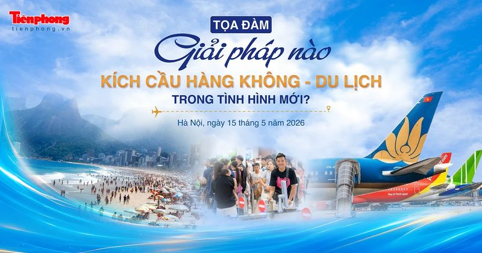
8h30 sáng nay, Tiền Phong tọa đàm nhiều vấn đề 'nóng' về hàng không, du lịch 🔗 MOI
Theo Nghị quyết của Quốc hội về kế hoạch phát triển kinh tế - xã hội, Việt Nam đặt mục tiêu tăng trưởng GDP bình quân từ 10%/năm trở lên trong giai đoạn 2026-2030, gắn với giữ vững ổn định kinh tế vĩ
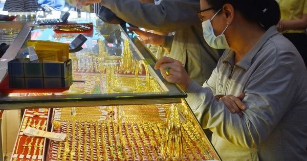
Giá vàng hôm nay 15-5: Đảo chiều lao xuống 🔗 MOI
Giá vàng hôm nay suy yếu Khoảng 6 giờ ngày 15-5 (giờ Việt Nam), giá vàng hôm nay trên thị trường quốc tế dao động quanh mức 4.662 USD/ounce, giảm 57 USD so với mức cao nhất trong phiên giao dịch đêm q
IAEA cảnh báo: Hơn 160 UAV lảng vảng gần các nhà máy điện hạt nhân ở Ukraine 🔗 MOI
(PLO)- Tổng Giám đốc Cơ quan Năng lượng Nguyên tử Quốc tế (IAEA) Rafael Mariano Grossi bày tỏ sự quan ngại sâu sắc về hoạt động quân sự gần các nhà máy điện hạt nhân ở Ukraine. Ngày 14-5, Cơ quan Năng
Tiến sĩ từng dẫn dắt mảng GenAI của Microsoft về nước làm giáo sư đại học 🔗 MOI
Trước khi trở về Trung Quốc, Tiến sĩ Lý Hoành Chí từng có hơn 10 năm làm việc tại Microsoft ngay sau khi hoàn thành chương trình tiến sĩ tại Đại học Columbia (Mỹ). Ông làm việc tại Microsoft Research
Bóng ma lạm phát nhăm nhe bủa vây Mỹ: Chính phủ bán trái phiếu lợi suất cao nhất 19 năm, thị trường rúng động với dự báo khả năng 80% Fed tăng lãi suất 🔗 MOI
TIN MỚI Cụ thể, ngày 13/5, Bộ Tài chính Mỹ phát hành 25 tỷ USD trái phiếu kỳ hạn 30 năm với lợi suất đạt mức 5,046%. Trước đó cùng ngày, lợi suất trái phiếu Chính phủ Mỹ tăng mạnh sau khi dữ liệu chín

Dự thảo văn kiện Đại hội XIV của Đảng: Nhìn từ lăng kính kinh tế - tài chính 🔗 MOI
Thời sự Dự thảo Báo cáo chính trị trình Đại hội XIV của Đảng đặt mục tiêu tăng trưởng GDP giai đoạn 2026–2030 đạt từ 10%/năm trở lên với định hướng rõ ràng chuyển đổi mô hình tăng trưởng dựa vào khoa

Đổi mới mô hình tăng trưởng gắn với tái cơ cấu nền kinh tế trong giai đoạn mới 🔗 MOI
Pháp luật Triển khai Nghị quyết số 07-NQ/TW ngày 18/11/2016 của Bộ Chính trị về chủ trương, giải pháp cơ cấu lại ngân sách nhà nước, quản lý nợ công, việc cơ cấu lại ngân sách nhà nước, quản lý nợ côn
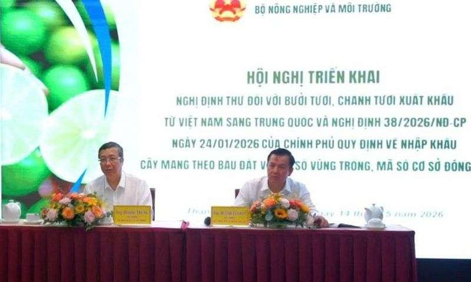
Xuất khẩu bưởi, chanh sang Trung Quốc cần đáp ứng điều kiện gì? 🔗 MOI
Việc ký kết Nghị định thư xuất khẩu bưởi, chanh sang Trung Quốc mới chỉ là bước đầu, còn để xuất khẩu thành công sẽ cần địa phương, doanh nghiệp, nông dân đáp ứng đồng bộ các yêu cầu trong quá trình s

Tiếp nhận phản ánh kiến nghị của doanh nghiệp 🔗 MOI
HỌ VÀ TÊN * EMAIL * SỐ ĐIỆN THOẠI * ĐỊA CHỈ * TIÊU ĐỀ * FILES ĐÍNH KÈM NỘI DUNG * RadEditor - HTML WYSIWYG Editor. MS Word-like content editing experience thanks to a rich set of formatting tools, dro
Thách thức chờ tân chủ tịch FED 🔗 MOI
Người ngồi vào chiếc ghế nóng này là ông Kevin Warsh sau khi được Thượng viện Mỹ phê chuẩn hôm 13-5 . Theo AP, ông Warsh, 56 tuổi, từng làm thống đốc FED và cố vấn kinh tế cho chính quyền Tổng thống G
Thông điệp từ thượng đỉnh Trung - Mỹ 🔗 MOI
Sáng qua, Trung Quốc tổ chức lễ đón cấp nhà nước Tổng thống Mỹ Donald Trump , với đầy đủ đội danh dự, quân nhạc và thảm đỏ tại quảng trường Thiên An Môn ở thủ đô Bắc Kinh. Sau đó, hội nghị thượng đỉnh
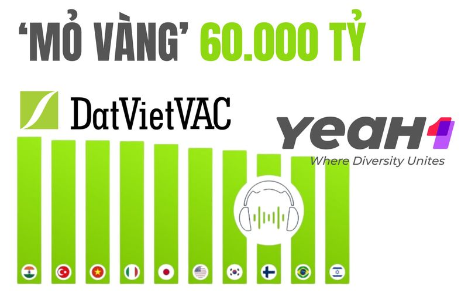
Vượt Mỹ, Nhật, Hàn Quốc, 83% người Việt đồng loạt làm một việc: Mở ra "mỏ vàng" 60.000 tỷ đồng 🔗 MOI
TIN MỚI Một thị trường 2,4 tỷ USD tiềm năng tại Việt Nam Theo Statista, một nghiên cứu sử dụng dữ liệu Spotify tại 73 quốc gia cho thấy, Việt Nam đứng Top 3 về mức độ ưu tiên nghe nhạc của nghệ sĩ tro

Khơi thông các động lực tăng trưởng kinh tế Việt Nam 🔗 MOI
Pháp luật Nhờ sự phối hợp đồng bộ của chính sách tài khóa và tiền tệ trong việc thúc đẩy cầu trong nước, kinh tế Việt Nam năm 2025 phục hồi mạnh, với tăng trưởng vượt mục tiêu đề ra. Về ổn định kinh t

Khu Công nghiệp, Khu Kinh tế 🔗 MOI
Ngày 12/5, Bộ trưởng Bộ Tài chính Ngô Văn Tuấn đã chủ trì buổi làm việc với Cục Thuế nhằm đánh giá kết quả giai đoạn 2021-2025 và hoạch định chiến lược cho 5 năm tới. Với mục tiêu thu ngân sách đạt 14
Xây dựng tương lai năng lượng bền vững 🔗 MOI
Chuyến công du một loạt nước ở Trung Đông và châu Âu của Thủ tướng Ấn Độ Narendra Modi phản ánh rõ nét chính sách này, nhằm ứng phó hiệu quả những cú sốc trên thị trường dầu mỏ. Chỉ trong vòng sáu ngà
Cử nhân nội địa tiến thẳng đến Quỹ tiền tệ quốc tế ở thủ đô Mỹ 🔗 MOI
Hoàng Hữu Đà, 34 tuổi, là trợ lý nghiên cứu tại IMF ở thủ đô Washington, Mỹ. Công việc chính của anh là theo dõi, nghiên cứu các diễn biến kinh tế trên thế giới, chẳng hạn như ảnh hưởng từ chính sách
Vị thế đặc biệt của Elon Musk tại Trung Quốc 🔗 MOI
Tỷ phú Elon Musk cùng hơn 12 CEO, lãnh đạo doanh nghiệp tháp tùng Tổng thống Mỹ Donald Trump tới Bắc Kinh ngày 14-15/5 để dự hội nghị thượng đỉnh với Chủ tịch Trung Quốc Tập Cận Bình. Trong đoàn còn c
Năng lượng & Khoáng sản 🔗 MOI
Ngày 9/4, Ủy ban Thường vụ Quốc hội đã cho ý kiến về dự thảo Nghị quyết của Quốc hội về việc ban hành một số quy định về thuế bảo vệ môi trường, thuế giá trị gia tăng, thuế tiêu thụ đặc biệt đối v
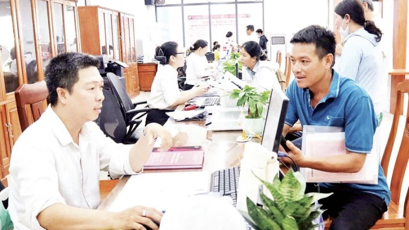
Kiện toàn đội ngũ cán bộ cơ sở 🔗 MOI
Đại biểu Quốc hội Nguyễn Đặng Ân (Đoàn Lạng Sơn) cho biết, cán bộ, công chức cấp xã một số nơi hiện còn thiếu về số lượng và rất thiếu công chức có chuyên môn sâu, như xây dựng, giao thông, công nghệ
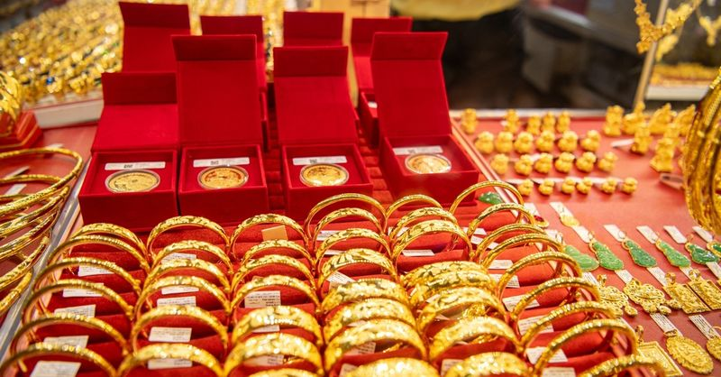
Giá vàng hôm nay 15/5/2026: Trầm lắng, vàng trong nước rơi vào trạng thái hiếm gặp 🔗 MOI
Giá vàng thế giới hôm nay 15/5/2026 Lúc 22h30 ngày 14/5 (giờ Việt Nam), giá vàng thế giới giao dịch ở mức 4.684 USD/ounce, mức độ biến động rất thấp. Bộ Lao động Mỹ cho biết số đơn xin trợ cấp thất ng
[Video] Xung đột Trung Đông phủ bóng Hội nghị BRICS tại Ấn Độ 🔗 MOI
Ngoại trưởng các nước BRICS nhóm họp tại New Delhi ngày 14/5, tập trung thảo luận các tác động từ xung đột tại Iran và nguy cơ mất an ninh năng lượng. Ấn Độ kêu gọi BRICS đóng vai trò ổn định trong bố
Anh điều tra hệ sinh thái phần mềm doanh nghiệp của Microsoft 🔗 MOI
Facebook Twitter Lưu bài viết Bản in Copy link Ngày 14/5, Cơ quan Cạnh tranh và thị trường Anh (CMA) thông báo mở cuộc điều tra nhằm xác định liệu Microsoft có nắm giữ “vị thế thị trường chiến lược” (
Iran xác nhận cho phép tàu Trung Quốc đi qua Eo biển Hormuz 🔗 MOI
Chào mừng quý độc giả và thính giả đến với Bản tin Thế giới - chuyên mục podcast thời sự quốc tế hàng ngày trên Báo Điện tử VietnamPlus. Tại đây, chúng tôi cập nhật nhanh nhất những diễn biến nổi bật
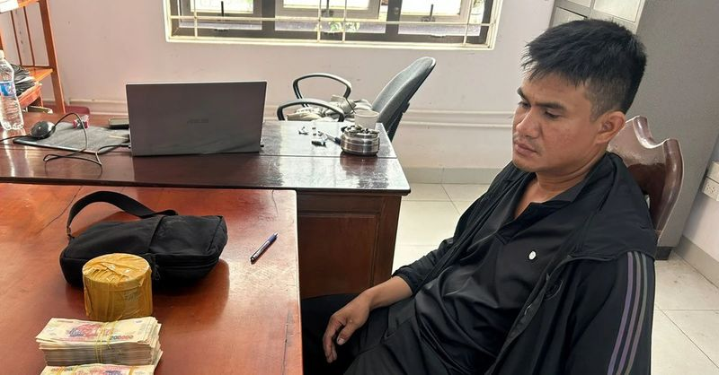
Điều tra vụ lừa bán thiên thạch 400 triệu đồng tại Gia Lai 🔗 MOI
Y Đam Mdrang cùng số tiền và tang vật trong vụ lừa đảo bán thiên thạch 400 triệu đồng tại thôn 7, xã Chư Sê, Gia Lai - Ảnh: Công an tỉnh Gia Lai Thông tin từ Công an tỉnh Gia Lai cho hay vào ngày 29-4
Lịch trực tiếp tứ kết U17 châu Á: Trung Quốc đấu Saudi Arabia 🔗 MOI
Lịch trực tiếp tứ kết U17 châu Á: Trung Quốc đấu Saudi Arabia - Đồ họa: AN BÌNH Giải vô địch U17 châu Á 2026 đã tìm ra 8 đội bóng xuất sắc nhất bước vào tứ kết: Saudi Arabia, Tajikistan, Nhật Bản, Tru

Kiến tạo không gian phát triển mới cho kinh tế tập thể 🔗 MOI
Pháp luật Trong giai đoạn 2021-2025, dựa vào mục tiêu phát triển, điều kiện ngân sách và nhu cầu hỗ trợ, năng lực của các hợp tác xã, Thủ tướng Chính phủ đã ban hành Chương trình hỗ trợ phát triển kin

Nhìn lại 1 năm thực thi Nghị quyết 68-NQ/TW 🔗 MOI
Doanh nghiệp Sau 1 năm triển khai Nghị quyết số 68-NQ/TW, nhiều doanh nghiệp công nghệ Việt ghi nhận những chuyển biến tích cực từ môi trường kinh doanh, cơ chế hỗ trợ và tư duy điều hành theo hướng k
Tạp chí Kinh tế Sài Gòn 🔗 MOI
Kinh tế Sài Gòn giữ bản quyền nội dung của trang web thesaigontimes.vn. Không sử dụng lại nội dung trên trang này dưới mọi hình thức, trừ khi được Kinh tế Sài Gòn đồng ý bằng văn bản. Trang ngoài sẽ đ
Tạp chí Kinh tế Sài Gòn 🔗 MOI
Kinh tế Sài Gòn giữ bản quyền nội dung của trang web thesaigontimes.vn. Không sử dụng lại nội dung trên trang này dưới mọi hình thức, trừ khi được Kinh tế Sài Gòn đồng ý bằng văn bản. Trang ngoài sẽ đ
Tạp chí Kinh tế Sài Gòn 🔗 MOI
Kinh tế Sài Gòn giữ bản quyền nội dung của trang web thesaigontimes.vn. Không sử dụng lại nội dung trên trang này dưới mọi hình thức, trừ khi được Kinh tế Sài Gòn đồng ý bằng văn bản. Trang ngoài sẽ đ
Tạp chí Kinh tế Sài Gòn 🔗 MOI
Kinh tế Sài Gòn giữ bản quyền nội dung của trang web thesaigontimes.vn. Không sử dụng lại nội dung trên trang này dưới mọi hình thức, trừ khi được Kinh tế Sài Gòn đồng ý bằng văn bản. Trang ngoài sẽ đ
Hai 'ảo thuật gia' lừa bán đá thiên thạch rởm với giá 400 triệu đồng 🔗 MOI
Ngày 14/5, Công an xã Chư Sê, tỉnh Gia Lai đã bàn giao đối tượng Y Phơu Byă (SN 1981, trú Buôn Ja, xã Hòa Sơn, tỉnh Đắk Lắk) và Y Đam Mdrang (SN 1993, trú Buôn Eea Khit, xã Dray Bhăng, tỉnh Đắk Lắk) c
Singapore, Trung Quốc đã làm gì với người bán rong? 🔗 MOI
Ít ai biết rằng hơn nửa thế kỷ trước, Singapore đầy rẫy hàng rong tự phát. Người bán mì kéo xe giữa đường, người gánh hoa quả chiếm lối đi bộ, quầy đồ ăn dựng sát cống thoát nước. Mùi thức ăn, khói th
Quốc gia nào xây hầm đường bộ dưới biển sâu nhất thế giới? 🔗 MOI
1. Quốc gia nào xây hầm đường bộ dưới biển sâu nhất thế giới? Mỹ 0% Trung Quốc 0% Na Uy 0% Thụy Điển 0% Chính xác Đường hầm vượt biển dài và sâu nhất thế giới đang được xây dựng tại Na Uy, dài gần 27k
Những đoàn xe xuyên sa mạc giúp vùng Vịnh né 'cổ chai' Hormuz 🔗 MOI
Chiến sự giữa Iran với Mỹ và Israel bùng phát cuối tháng 2 khiến eo biển Hormuz rơi vào vòng phong tỏa kép. Ngay sau đó, Bob Wilt, giám đốc điều hành tập đoàn khai khoáng Maaden của Arab Saudi, đã cử
Giám đốc Anthropic: 'AI viết 90% mã của công ty' 🔗 MOI
Trong podcast Invest Like the Best của nhà đầu tư Patrick O'Shaughnessy phát sóng ngày 13/5, Rao chia sẻ tại Anthropic, AI đang thực hiện công việc trí tuệ ngày càng nhiều, từ kỹ thuật phần mềm đến bá

Chuyên đề Agribank 🔗 MOI
Trước áp lực thực thi Nghị định số 70/2025/NĐ-CP về hóa đơn điện tử và quản lý thuế, Agribank tổ chức hội nghị tập huấn toàn quốc, thống nhất quy trình hỗ trợ và giới thiệu gói giải pháp số dành riêng

TỔNG QUAN TỔNG QUAN KINH TẾ 🔗 MOI
Kinh tế Hoạt động điều hành chính sách tài khóa năm 2025 diễn ra trong bối cảnh tình hình kinh tế trong nước và quốc tế tiếp tục diễn biến phức tạp, căng thẳng thương mại toàn cầu gia tăng, đặc biệt l

Hưởng lợi từ giá phân bón, DPM lãi lớn quý đầu năm 🔗 MOI
Báo sau thuế hơn 410 tỷ đồng trong quý 1/2026, DPM đã hoàn thành tới 60% mục tiêu lợi nhuận năm chỉ sau một quý đầu năm. Ảnh: PVFCCo - Phú Mỹ. Tổng công ty Phân bón và Hóa chất Dầu khí (PVFCCo -

Tiếp nhận phản ánh kiến nghị của công dân 🔗 MOI
HỌ VÀ TÊN * EMAIL * SỐ ĐIỆN THOẠI * ĐỊA CHỈ * TIÊU ĐỀ * FILES ĐÍNH KÈM NỘI DUNG * RadEditor - HTML WYSIWYG Editor. MS Word-like content editing experience thanks to a rich set of formatting tools, dro
Nhiều xã thiếu cán bộ đất đai, tài chính và công nghệ thông tin. 🔗 MOI
Phân cấp, phân quyền tăng mạnh Ngày 14/5, Ban Thường vụ Tỉnh ủy Quảng Trị tổ chức hội nghị sơ kết 1 năm thực hiện sắp xếp đơn vị hành chính các cấp và hoạt động của chính quyền địa phương 2 cấp bằng h
Ngân hàng tăng cho vay cá nhân mua nhà 🔗 MOI
TIN MỚI Dòng vốn xoay về người mua cuối cùng Theo báo cáo tài chính quý I/2026 của Techcombank, dư nợ cho vay kinh doanh bất động sản của ngân hàng này trong ba tháng đầu năm đạt khoảng trên 198.800 t
OPEC+ lên kế hoạch tăng dần sản lượng dầu 🔗 MOI
Facebook Twitter Lưu bài viết Bản in Copy link Tổ chức các Nước Xuất khẩu Dầu mỏ (OPEC) và các đồng minh - còn gọi là OPEC+ đang lên kế hoạch tăng dần sản lượng dầu để đưa nguồn cung trở lại mức trước
Đường băng cho nền kinh tế cất cánh 🔗 MOI
Theo Bộ Tài chính, tổng kế hoạch đầu tư công vốn ngân sách nhà nước năm 2026 đã được Thủ tướng Chính phủ giao là hơn 1 triệu tỷ đồng, gồm hơn 363 nghìn tỷ đồng vốn ngân sách Trung ương và hơn 650 nghì
Khách Tây mê mẩn ngôi làng trăm tuổi không ô tô, xe máy ở Hải Phòng 🔗 MOI
Có dịp trải nghiệm tour du thuyền khám phá vịnh Hạ Long (Quảng Ninh) và Lan Hạ (TP Hải Phòng) 3 ngày 2 đêm dịp gần đây, Diana Neven (người Hà Lan) không khỏi thích thú trước khung cảnh biển đảo đẹp nh
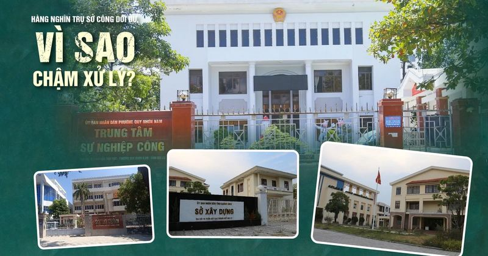
Viết lại tương lai cho những trụ sở 'lặng im' 🔗 MOI
Video: Nguyễn Thành Tại phường Hải Châu khu vực lõi trung tâm của đô thị TP. Đà Nẵng, không ít cơ sở nhà đất công sản quy mô lớn, thuộc diện “đất vàng” đang bị bỏ hoang, xuống cấp theo thời gian. Tr
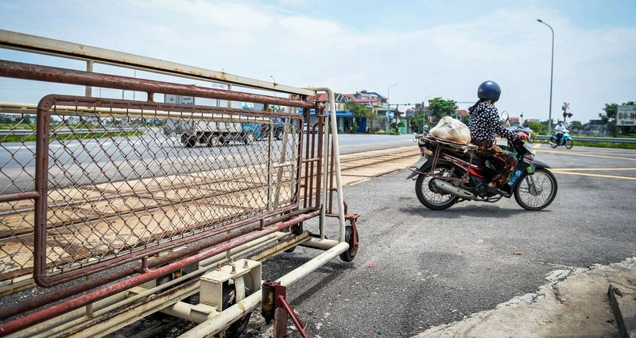
Động thái mới của Ninh Bình liên quan con đường hơn 500 tỷ đồng 🔗 MOI
Ngày 15/5, đại diện Ban Quản lý dự án đầu tư xây dựng số 2 tỉnh Ninh Bình cho biết, đơn vị đã phối hợp triển khai đóng đường ngang tại Km93+893, đồng thời chính thức đưa vào khai thác đường ngang mới
Đại học số 1 Mỹ mất 'niềm tự hào' hơn 100 năm vì AI 🔗 MOI
Trong suốt 133 năm, kể từ năm 1893, Đại học Princeton luôn tự hào về "Bộ quy tắc danh dự" đặc biệt: các kỳ thi không hề có giám thị, diễn ra hoàn toàn dựa trên cam kết không gian lận của sinh viên. Kỷ
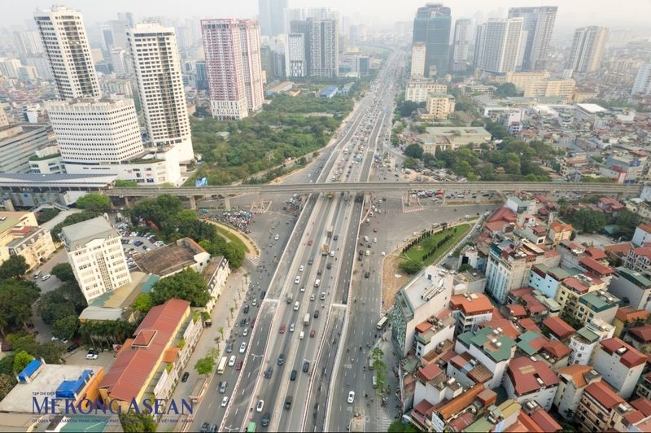
Tính đến 30/4: Giải ngân vốn đầu tư công đạt hơn 144 nghìn tỷ đồng 🔗 MOI
Bộ Tài chính cho biết, số giải ngân vốn đầu tư công từ đầu năm đến hết ngày 30/4/2026 là 144.282,9 tỷ đồng, đạt 14,2% kế hoạch Thủ tướng Chính phủ giao. Theo Báo cáo về tình hình phân bổ, giải ngân vố

Ban hành danh mục 15 bộ dữ liệu phục vụ phát triển AI 🔗 MOI
Phó Thủ tướng Hồ Quốc Dũng vừa ký Quyết định số 804/QĐ-TTg ngày 6/5 ban hành danh mục bộ dữ liệu phục vụ phát triển trí tuệ nhân tạo (AI) trong các lĩnh vực thiết yếu. Theo quyết định, danh mục bộ dữ
Chìa khóa để doanh nghiệp Việt 'tiến sâu' hơn vào thị trường Hàn Quốc 🔗 MOI
Để tiến sâu vào thị trường Hàn Quốc, doanh nghiệp Việt phải bỏ tư duy cạnh tranh bằng giá rẻ. Thay vào đó, "chìa khóa" nằm ở năng lực minh bạch dữ liệu, tuân thủ ESG và tiêu chuẩn công nghệ. Ông Lê Ho

Chính phủ với doanh nghiệp 🔗 MOI
20/03/2026 (Chinhphu.vn) - Chính phủ ban hành Nghị quyết số 11/2026/NQ-CP về chi phí tiền lương Ngân hàng thương mại TNHH một thành viên Xây dựng Việt Nam, Ngân... 04/03/2026 (Chinhphu.vn) - Chính phủ

Tham vấn chính sách 🔗 MOI
14/05/2026 (Chinhphu.vn) - Bộ Tài chính đang dự thảo Nghị định sửa đổi, bổ sung một số điều của Nghị định số 155/2025/NĐ-CP ngày 16/6/2026 của Chính phủ quy... 14/05/2026 (Chinhphu.vn) - Bộ Khoa học v
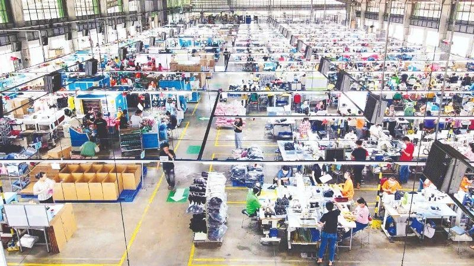
Tạo vị thế trong chuỗi cung ứng toàn cầu 🔗 MOI
Để đẩy mạnh xuất khẩu, các doanh nghiệp cần chủ động nguồn cung nguyên liệu, chuyển đổi theo hướng sản xuất xanh nhằm nâng cao sức cạnh tranh và khẳng định vị thế trong chuỗi cung ứng toàn cầu. Phó Ch
Cơ quan thuế chỉ rõ 6 chiêu hộ kinh doanh né thanh toán, cảnh báo rủi ro pháp lý 🔗 MOI
Thuế cơ sở 7 tỉnh Đắk Lắk vừa cảnh báo về việc cơ quan chức năng đã ghi nhận 6 hình thức đối phó trong thanh toán của hộ kinh doanh. Thứ nhất , không cho khách chuyển khoản với lý do như máy hỏng, mạn
4 tàu ngầm hạt nhân mạnh nhất năm 2026: Sức mạnh răn đe dưới lòng đại dương 🔗 MOI
Xem nhanh: Tàu ngầm hạt nhân là gì? Ohio-class (Mỹ) Borei-class (Nga) Virginia-class (Mỹ) Astute-class (Anh) Tàu ngầm hạt nhân là gì? Tàu ngầm hạt nhân là loại tàu sử dụng lò phản ứng hạt nhân để tạo
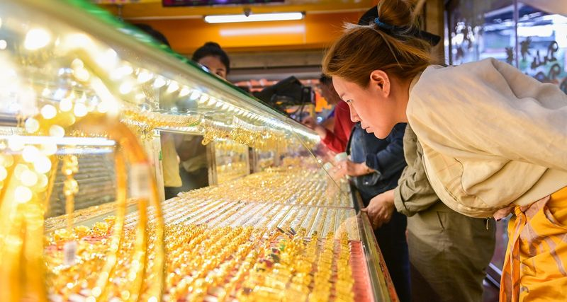
Chênh lệch giá vàng giảm từ 30 triệu xuống 16 triệu đồng/lượng: Cơn sốt hạ nhiệt 🔗 MOI
Giá vàng giảm, khoảng cách với thế giới thu hẹp Giá vàng miếng SJC và vàng nhẫn trong nước hiện lùi về quanh mốc 165 triệu đồng/lượng, trong khi mức chênh lệch với giá thế giới quy đổi chỉ còn khoảng
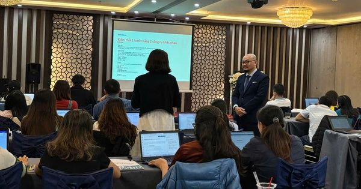
Kỷ nguyên AI: Thâm niên không còn là "lá chắn" 🔗 MOI
Quý I/2026, thành phố có gần 33.000 người hưởng bảo hiểm thất nghiệp, trong khi nhu cầu tuyển dụng vượt 82.000 vị trí. Vấn đề lúc này không còn đơn thuần là thiếu việc làm, mà là khoảng cách ngày càng
Chiến sự Ukraine ngày 1.541: Nga tập kích bằng UAV và tên lửa Kinzhal, Ukraine rung chuyển 🔗 MOI
Hiện trường ô tô cháy bên ngoài tòa nhà chung cư bị hư hại ở vùng ngoại ô Kyiv sau một vụ không kích ảnh: reuters Nga mở đợt không kích lớn nhất vào Ukraine Trong suốt 3 ngày qua, thủ đô Kyiv và các t
"Tick xanh trách nhiệm" vào bữa ăn học đường 🔗 MOI
Ngày 14-5, Sở Công Thương đã phối hợp với UBND xã Đông Thạnh và Hội Công nghệ cao TP HCM tổ chức hội nghị giới thiệu mô hình suất ăn học đường "Tick xanh trách nhiệm" đến các hiệu trưởng và đơn vị cun
Phân tích mới: Người lao động Việt Nam lạc quan nhưng ít gắn bó với doanh nghiệp nhất Đông Nam Á 🔗 MOI
Theo báo cáo State of the Global Workplace 2026 của Gallup thực hiện tại hơn 140 quốc gia và vùng lãnh thổ, người lao động Việt Nam được đánh giá có mức sống cân bằng nhất Đông Nam Á . Có tới 59% ngườ
Việt Nam sắp có ngân hàng đầu tiên vượt 110.000 tỷ vốn điều lệ, nhưng không phải "Big 4" 🔗 MOI
TCB: Giá hiện tại Thay đổi Xem hồ sơ doanh nghiệp TIN MỚI Ngân hàng TMCP Kỹ thương Việt Nam (Techcombank – mã TCB) vừa công bố nghị quyết HĐQT thông qua việc triển khai phương án tăng vốn điều lệ từ p

Trẻ sinh ra di truyền giang mai từ mẹ có điều trị được không? 🔗 MOI

Kiểm soát lạm phát trước những "biến số" cuối năm 🔗 MOI
Tài chính Tại Nghị quyết số 86/NQ-CP ngày 4/11/2025 về triển khai nhiệm vụ trọng tâm những tháng cuối năm 2025, Chính phủ tiếp tục yêu cầu về kiểm soát lạm phát, giữ vững ổn định kinh tế vĩ mô. Trong
🔗 MOI
Mùa World Cup sắp đến, tui xin gửi lời cám ơn dì Tư tạp hóa đã dũng cảm giữ giá món ăn quốc dân nuôi sống hàng triệu tín đồ bóng đá. Cám ơn dì Tư tạp hóa giữ giá mùa World Cup - Tranh: Đức Thuận World
Thần đồng Mỹ thất thủ trước tay vợt pickleball Việt Nam 🔗 MOI
Thần đồng Tama chật vật khi đấu với Hùng Anh - Ảnh: PPA Trong ngày thi đấu 14-5, PPA Asia chứng kiến cú sốc khi hạt giống số 3 Tama Shimabukuro bị loại bởi tay vợt "chưa có tuổi" giải. Nguyễn Hùng Anh
Lịch trực tiếp Giải hạng nhất vòng 19: Đồng Nai chạm trán Đại học Văn Hiến 🔗 MOI
Lịch trực tiếp Giải hạng nhất vòng 19: Đồng Nai gặp Đại học Văn Hiến - Đồ họa: AN BÌNH Vòng 19 Giải hạng nhất mở màn với cặp đấu của Trẻ PVF-CAND gặp TP.HCM (18h ngày 15-5). Hai đội đang bám đuổi sát
Khoản tiền thưởng lớn chưa từng thấy chờ đợi Lại Lý Huynh 🔗 MOI
Lại Lý Huynh chuẩn bị bước vào giai đoạn đặc biệt của sự nghiệp - Ảnh: QUANG ĐỊNH Làng cờ tướng đỉnh cao Trung Quốc nổi tiếng với những giải đấu "lắm tiền nhiều bạc", đi cùng đó là trải nghiệm quý báu
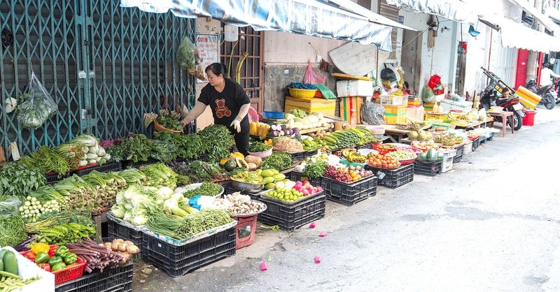
Hơn 963.000 người nộp thuế 'bỏ' địa chỉ kinh doanh, vì sao? 🔗 MOI
Các hộ kinh doanh không còn hoạt động tại địa chỉ đăng ký cũng được ngành thuế sàng lọc trong đợt này - Ảnh minh họa: HỮU HẠNH Con số này rất lớn vì cả nước chỉ có 1,1 triệu doanh nghiệp đang hoạt độn

Huy động tài chính xanh hướng tới mục tiêu phát triển bền vững 🔗 MOI
Pháp luật Chuyển đổi năng lượng xanh đã trở thành xu thế toàn cầu mang tính bắt buộc, gắn liền với mục tiêu Net Zero và yêu cầu cạnh tranh trong chuỗi cung ứng quốc tế. Trong bối cảnh đó, doanh nghiệp

Tạp chí Kinh tế Tài chính kỳ 2 tháng 4/2026 🔗 MOI

Bảo vệ nhà đầu tư trước “cơn sốt” tài sản mã hóa 🔗 MOI
Chứng khoán Trong bối cảnh Việt Nam đang từng bước xây dựng khung pháp lý và chuẩn bị thí điểm thị trường tài sản mã hóa theo Nghị quyết số 05/2025/NQ-CP của Chính phủ, bài toán về an toàn hệ thống, m

Kỷ niệm 51 năm Ngày Giải phóng miền Nam, thống nhất đất nước: Tự chủ chiến lược, kiến tạo thịnh vượng 🔗 MOI
Kinh tế Trong bối cảnh cạnh tranh thu hút đầu tư công nghệ ngày càng quyết liệt, Việt Nam đang chủ động mở cánh cửa ra thế giới để đón các “đại bàng công nghệ”, coi đây là động lực quan trọng để chuyể

Chỉ đạo, quyết định của Chính phủ - Thủ tướng Chính phủ 🔗 MOI
15/05/2026 (Chinhphu.vn) - Văn phòng Chính phủ ban hành Thông báo số 246/TB-VPCP kết luận Phiên họp lần thứ ba năm 2026 của Ban Chỉ đạo của Chính phủ về phát... 14/05/2026 (Chinhphu.vn) - Thủ tướng Ch

Nước CHXHCN Việt Nam 🔗 MOI
© Cổng Thông tin điện tử Chính phủ Tổng Giám đốc: Nguyễn Hồng Sâm Trụ sở: 16 Lê Hồng Phong - Ba Đình - Hà Nội. Điện thoại: Văn phòng: 080 43162; Fax: 080.48924 Email: thongtinchinhphu@chinhphu.vn Bản
Kỳ tích U-17 Việt Nam và tương lai đoàn quân trẻ 🔗 MOI
(PLO)- Chiến thắng nghẹt thở trước UAE đã đưa U-17 Việt Nam đến World Cup, mở ra hy vọng về một thế hệ có thể thay đổi tương lai bóng đá nước nhà. Sau trận đấu lịch sử , HLV Cristiano Roland đã lần đầ
Phụ huynh mang con đến chỗ làm, con nghịch ngợm đốt toàn bộ văn phòng 🔗 MOI
TIN MỚI Một cậu bé 12 tuổi tại Trung Quốc được cha mẹ đưa đến nơi làm việc đã "nghịch lửa" theo đúng nghĩa đen và khiến toàn bộ văn phòng bị phá hủy hoàn toàn. Theo tin từ Red Star News, vào ngày 30 t
Nghệ sĩ Việt Hương đính chính 🔗 MOI
Cục Quản lý Dược (Bộ Y tế) vừa phát đi thông báo đình chỉ lưu hành, thu hồi trên toàn quốc đối với 511 sản phẩm của Công ty TNHH mỹ phẩm Việt Hương (địa chỉ nhà máy sản xuất mỹ phẩm: Cụm Công nghiệp l
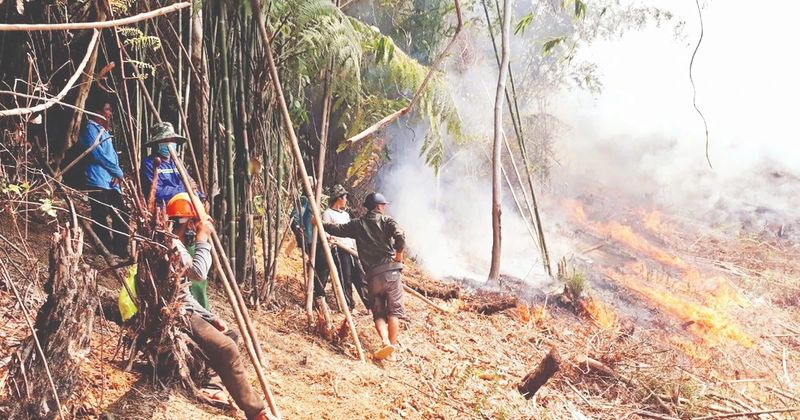
Chủ động phương án bảo vệ rừng trong mùa nắng nóng 🔗 MOI
Các lực lượng chức năng cùng cấp ủy, chính quyền và người dân tại các địa phương đang chủ động triển khai các biện pháp phòng chống cháy rừng. Theo thông tin cảnh báo của Cục Lâm nghiệp và Kiểm lâm, n
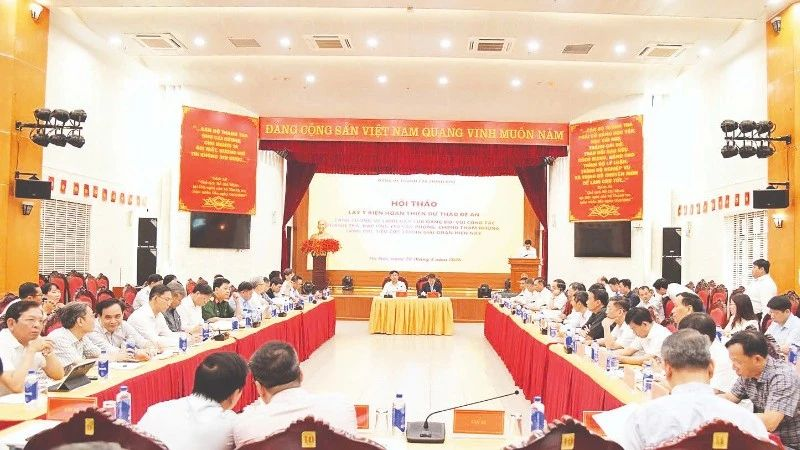
Tăng cường sự lãnh đạo của Đảng trong phòng, chống tham nhũng, lãng phí, tiêu cực 🔗 MOI
Việc tăng cường sự lãnh đạo tuyệt đối, trực tiếp về mọi mặt của Đảng trong công tác này vừa nhằm làm trong sạch bộ máy, là nền tảng để bảo đảm sự ổn định chính trị và thúc đẩy kinh tế phát triển bền v
Miền Bắc nắng nóng đỉnh điểm 🔗 MOI
Khu vực Đông Bắc Bộ hôm nay nắng nóng và nắng nóng gay gắt, chiều tối và đêm có mưa rào và dông vài nơi. Gió nam đến tây nam cấp 2-3. Nhiệt độ thấp nhất 26-29 độ.
Thi lớp 10 căng thẳng hơn đại học: Bài 2 - Gánh nặng tâm lí trên vai sĩ tử 🔗 MOI
Càng học càng tụt Phản ánh với phóng viên, chị Nguyễn Thị Thu Hiền (Ninh Bình) không giấu nổi sự lo âu khi chỉ còn 10 ngày nữa là con gái bước vào phòng thi. Trái ngược với kì vọng về sự bứt phá ở gia
Palestine: Ông Mahmoud Abbas tiếp tục giữ vai trò lãnh đạo Fatah 🔗 MOI
Facebook Twitter Lưu bài viết Bản in Copy link Đại hội lần thứ 8 của Phong trào Giải phóng dân tộc Palestine (Fatah) ngày 14/5 đã bầu Tổng thống chính quyền Palestine Mahmoud Abbas tiếp tục giữ chức l
Chàng thợ xăm cưới mẹ đơn thân hơn 11 tuổi và cuộc hôn nhân xúc động 🔗 MOI
Chương trình Vợ chồng son số mới nhất phát sóng câu chuyện tình yêu của cặp đôi Phạm Trung Thành (32 tuổi, Hà Nội) và Đào Thanh Tú (43 tuổi, Hà Nội). Hơn kém nhau 11 tuổi, cặp đôi vượt qua nhiều rào c
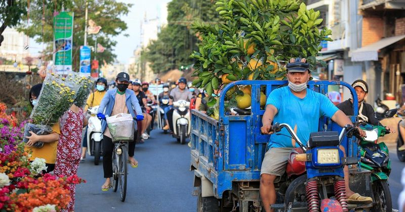
Rắc rối 'giấy khai sinh' cho hàng vận chuyển trên đường 🔗 MOI
Mật ong, nấm linh chi, cây mai... phải có hóa đơn? Chi cục Quản lý thị trường tỉnh Lạng Sơn mới đây thực hiện tạm giữ 9 bao tải, tổng trọng lượng 80 kg, bên trong có chứa mặt hàng xác ve sầu sấy khô,
Việt Nam đề xuất nhiều định hướng hợp tác tại Hội nghị Ngoại trưởng BRICS 🔗 MOI
Facebook Twitter Lưu bài viết Bản in Copy link Ngày 14/5, Hội nghị Bộ trưởng Ngoại giao Nhóm các nền kinh tế mới nổi (BRICS) mở rộng đã khai mạc tại thủ đô New Delhi dưới sự chủ trì của Bộ trưởng Ngoạ
Bản tin thời sự sáng 15/5/2026: Xăng sinh học E10 sẽ bán rộng rãi từ hôm nay 🔗 MOI
Cử người không đúng thành phần dự cuộc họp của Chính phủ, đề xuất phê bình công khai 🔗 MOI
Văn phòng Chính phủ vừa gửi Bộ Tư pháp thẩm định hồ sơ dự thảo Nghị định về Quy chế làm việc của Chính phủ, thay thế Nghị định số 39/2022. Dự thảo tập trung hoàn thiện các quy định nhằm siết chặt kỷ l
Pháp công bố đội hình dự World Cup 2026 🔗 MOI
Tối 14/5, HLV Didier Deschamps công bố danh sách tuyển Pháp dự World Cup 2026 diễn ra tại Mỹ, Canada và Mexico từ ngày 11/6 đến 19/7. Đây cũng là giải đấu cuối cùng của HLV 57 tuổi cùng đội tuyển, sau
Cảnh báo mới về giá dầu thế giới 🔗 MOI
Trong lúc đó, nỗ lực tìm kiếm giải pháp hòa bình cho cuộc khủng hoảng vẫn còn bế tắc. "Hơn 10 tuần kể từ khi xung đột tại Trung Đông bắt đầu, tình trạng gián đoạn nguồn cung ngày càng trầm trọng tại e
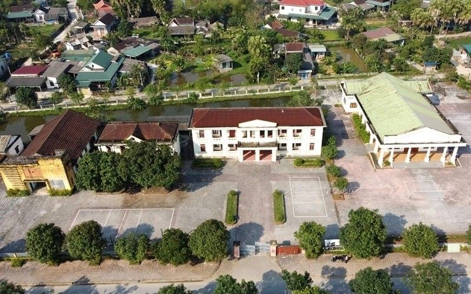
Hơn 6.000 cơ sở nhà, đất dôi dư đang chờ xử lý dứt điểm 🔗 MOI
(PLO)- Thủ tướng giao Bộ Tài chính chủ trì nghiên cứu, tổng hợp các đề xuất, kiến nghị về việc xử lý với nhà, đất dôi dư, để báo cáo Chính phủ xây dựng nghị quyết đặc thù theo trình tự, thủ tục rút gọ
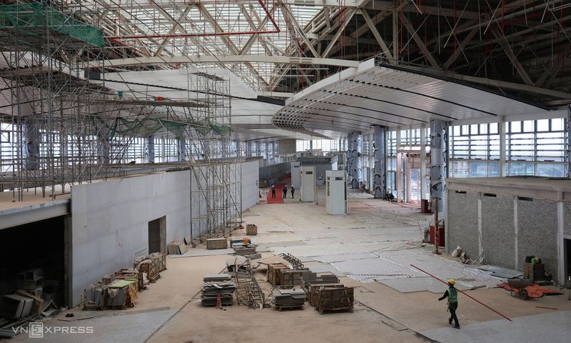
Nhà ga sân bay Long Thành vắng lao động giai đoạn về đích 🔗 MOI
Sân bay Long Thành khởi công đầu năm 2021 trên diện tích hơn 5.000 ha tại xã Long Thành, là dự án trọng điểm quốc gia với tổng vốn gần 337.000 tỷ đồng. Dự án đặt mục tiêu khai thác thương mại vào cuối
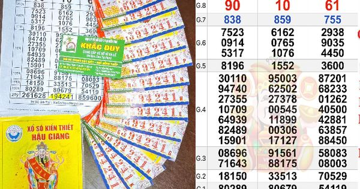
Trúng xổ số miền Nam, nhiều người ở TPHCM, Vĩnh Long và Đồng Nai đổi thưởng ngay trong đêm 🔗 MOI
Từ tối 14 đến sáng 15-5, sau khi kết quả xổ số miền Nam được công bố, các đại lý vé số đã tìm ra nhiều khách hàng trúng giải độc đắc và giải an ủi vé số của 3 đài. Tất cả đều đổi thưởng ngay trong đêm
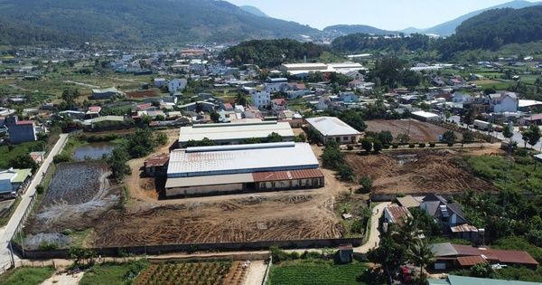
Tập kết phân bón gây ô nhiễm 🔗 MOI
Nhiều ngày qua, nhà cửa các hộ dân tại thôn Phú Thạnh luôn trong cảnh "cửa đóng then cài" do mùi hôi thối nồng nặc phát ra từ Công ty TNHH Phát triển Kinh tế Tây Nguyên, chưa kể ruồi nhặng bay vào nhà
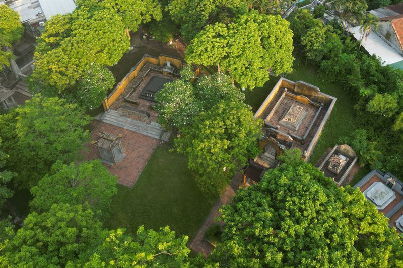
Nơi an nghỉ của hai vua triều Nguyễn bị lưu đày 🔗 MOI
Thi hài vua Thành Thái và vua Duy Tân được chôn cất cạnh nhau trong khuôn viên quần thể An Lăng ở phường An Cựu. An Lăng vốn là nơi an nghỉ của vua Dục Đức, vua thứ 5 của triều Nguyễn, cha của vua Thà
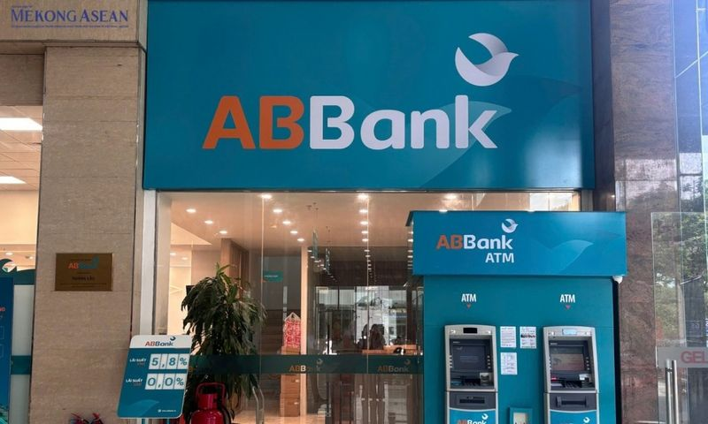
ABBank hoàn thành 1/3 kế hoạch lợi nhuận năm sau 3 tháng 🔗 MOI
Nhờ thu ngoài lãi bứt phá, tổng thu nhập hoạt động tăng hơn gấp đôi, ABBank báo lãi trước thuế 1.500 tỷ đồng trong quý 1/2026, tỷ lệ nợ xấu giảm xuống còn 0,82%. Ngân hàng ABBank. Ảnh: Thu Trang/Mekon
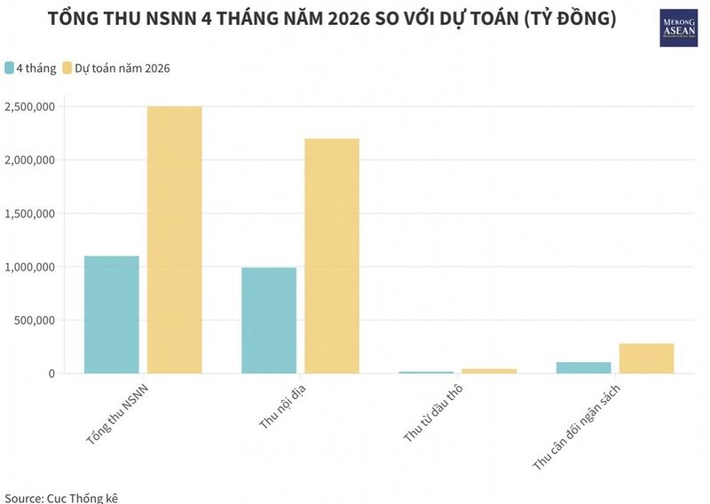
Thu ngân sách hơn 1,1 triệu tỷ đồng trong 4 tháng đầu năm 🔗 MOI
Trong 4 tháng đầu năm, tổng thu ngân sách Nhà nước đạt 1.114 nghìn tỷ đồng, tổng chi đạt 668.200 tỷ đồng. Bội thu ngân sách gần 445.000 tỷ đồng. Theo số liệu từ Cục Thống kê, tổng thu ngân sách Nhà nư

Ngành vận tải biển quý 1/2026: Hầu hết tăng trưởng, Vinaship lãi đột biến nhờ bán tàu 🔗 MOI
Quý 1/2026, nhiều doanh nghiệp vận tải biển ghi nhận tăng trưởng cả về doanh thu và lợi nhuận, đặc biệt Vinaship dù doanh thu giảm nhưng vẫn báo lãi đột biến nhờ khoản thu nhập từ thanh lý tàu.

Huy động nguồn lực cho tăng trưởng xanh 🔗 MOI
Pháp luật Bài viết phân tích tiềm năng, thực trạng và định hướng phát triển các mô hình du lịch biển tại Việt Nam nhằm hướng tới một nền kinh tế biển xanh, bền vững. Với đường bờ biển dài hơn 3.260 km

Góc chuyên gia & nhà quản lý 🔗 MOI
Ngày 12/5, Bộ trưởng Bộ Tài chính Ngô Văn Tuấn đã chủ trì buổi làm việc với Cục Thuế nhằm đánh giá kết quả giai đoạn 2021-2025 và hoạch định chiến lược cho 5 năm tới. Với mục tiêu thu ngân sách đạt 14

Tự chủ an ninh năng lượng quốc gia 🔗 MOI
Kinh tế Trong bối cảnh những cú sốc năng lượng toàn cầu ngày càng lan rộng và khó dự báo, bảo đảm an ninh năng lượng đã trở thành vấn đề sống còn đối với mỗi quốc gia. Với Việt Nam, Nghị quyết số 70-N

Hoạt động của Lãnh đạo Bộ Tài chính 🔗 MOI
Ngày 12/5, Bộ trưởng Bộ Tài chính Ngô Văn Tuấn đã chủ trì buổi làm việc với Cục Thuế nhằm đánh giá kết quả giai đoạn 2021-2025 và hoạch định chiến lược cho 5 năm tới. Với mục tiêu thu ngân sách đạt 14
Hoa hậu Thế giới 2026 sắp tổ chức tại Việt Nam có gì đặc sắc? 🔗 MOI
Hoa hậu Thế giới 2025 - Opal Suchata Chuangsri cùng bà Julia Morley (chủ tịch cuộc thi) dự họp báo khởi động Miss World 2026 tại TP.HCM ẢNH: BTC Chiều 14.5 tại TP.HCM, đương kim Hoa hậu Thế giới Opal
Kiến tạo hệ sinh thái cho ngành sự kiện-triển lãm 🔗 MOI
Bên cạnh đó, việc hoàn thiện hệ thống cơ sở hạ tầng phục vụ các chương trình, sự kiện lớn theo hướng hiện đại, tích hợp nhiều công năng cũng tạo lực đẩy để ngành sự kiện-triển lãm bứt phá. Cùng với cá
🔗 MOI
Theo UBND phường Gia Định, tuyến đường Bùi Hữu Nghĩa có 112 căn phải giải tỏa hoàn toàn, bàn giao mặt bằng phục vụ dự án cải tạo rạch Xuyên Tâm. Người dân khu vực cho biết, đây là lần đầu nhìn thấy to
Khát vọng trung tâm du lịch biển quốc tế 🔗 MOI
Từ tư duy làm du lịch đơn tuyến, khai thác lợi thế thiên nhiên thuần túy, Khánh Hòa đang chuyển mạnh sang mô hình liên kết giữa du lịch-thương mại-đầu tư để hình thành chuỗi giá trị cộng hưởng. Đánh t
Giá bạc hôm nay 15/5/2026 bất ngờ giảm mạnh sau khi chạm mốc 89 triệu đồng/kg 🔗 MOI
Giá bạc trong nước hôm nay 15/5/2026 Đóng cửa phiên giao dịch 14/5, Công ty TNHH MTV Vàng bạc Đá quý Ngân hàng Sài Gòn Thương Tín (Sacombank - SBJ) niêm yết giá bạc miếng loại 1 lượng ở mức 3,186-3,28
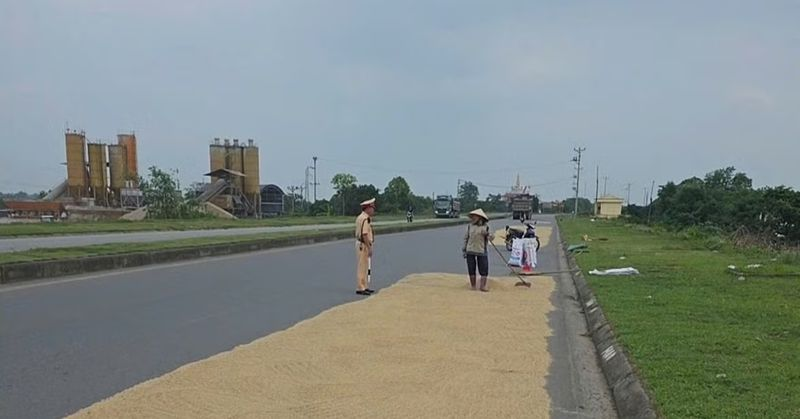
Lái xe qua đường phơi đầy thóc lúa, rơm rạ mùa gặt, tài xế cần lưu ý gì? 🔗 MOI
Mỗi mùa thu hoạch, nhiều tuyến đường nông thôn tại Việt Nam lại trở thành "sân" phơi lúa, rơm rạ của người dân. Thóc trải kín mặt đường, rơm rạ chất thành từng đống, thậm chí có nơi dựng gạch đá, cọc
Sinner vào bán kết Rome Masters, phá kỷ lục “khó đọ” của Djokovic 🔗 MOI
Tay vợt số 1 thế giới Jannik Sinner tiếp tục phong độ ấn tượng khi đánh bại Andrey Rublev 6-2, 6-4 ở tứ kết Rome Masters 2026, qua đó giành vé vào bán kết và thiết lập kỷ lục mới tại hệ thống ATP Mast
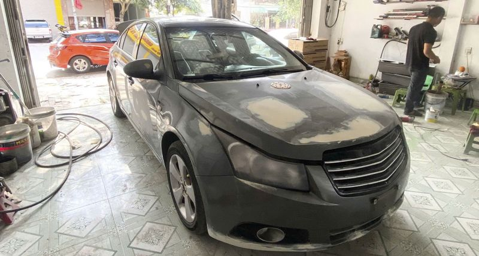
Vụ mua xe Chevrolet cũ giá đắt, đi 2 ngày chết máy: Công an xã nêu hướng xử lý 🔗 MOI
Liên quan đến vụ việc vợ chồng chị Nguyễn Thị Hảo mua của anh Nguyễn Đức Anh chiếc Chevrolet Cruze đời 2011 với tổng chi phí gần 300 triệu đồng nhưng chỉ sau 2 ngày sử dụng xe đã chết máy, chiều 14/5,

"Tối hậu thư" với dự án treo 🔗 MOI
Những dự án treo tại Hà Nội đang đứng trước đợt xử lý mạnh tay chưa từng có khi UBND thành phố vừa yêu cầu 341 dự án chậm triển khai phải báo cáo thực trạng, đồng thời tuyên bố sẽ thu hồi nếu chủ đầu
Dầu ô liu và dầu đậu nành: Khác biệt thế nào? 🔗 MOI
Dầu ô liu, đặc biệt là loại nguyên chất, chứa hàm lượng cao a xít oleic. Đây là loại chất béo không bão hòa đơn có lợi cho tim mạch. Trong bữa ăn hằng ngày, nếu thay mỡ động vật bằng chất béo không bã

Xoắn dây tinh và thời gian vàng cấp cứu 🔗 MOI

Bộ Tài chính đồng hành cùng doanh nghiệp nhỏ và vừa trên hành trình chuyển đổi kép 🔗 MOI
Chuyển đổi số Trong bối cảnh tiêu chuẩn ESG, yêu cầu Net Zero và sức ép cạnh tranh toàn cầu ngày càng gia tăng, phần lớn doanh nghiệp Việt Nam, đặc biệt là doanh nghiệp nhỏ và vừa đang đối mặt với kho
Nguyễn Anh Minh dự Arnold Palmer Cup: Bước đệm vàng tới giấc mơ PGA Tour 🔗 MOI
Bước đệm vàng cho sự nghiệp golf chuyên nghiệp Nguyễn Anh Minh thiết lập thêm một cột mốc mới cho golf Việt Nam khi chính thức góp mặt tại Arnold Palmer Cup, sân chơi danh giá nhất của hệ thống golf đ
Chi tiết 9 trung tâm đô thị lớn của Hà Nội trong quy hoạch 100 năm 🔗 MOI
Theo Quyết định số 2512 do Chủ tịch UBND TP Hà Nội Vũ Đại Thắng ký ban hành, Quy hoạch tổng thể Thủ đô với tầm nhìn 100 năm bao phủ toàn bộ địa giới hành chính thành phố với diện tích khoảng 3.359,84k
Dự báo mới nhất: Thời điểm TPHCM và Nam Bộ chấm dứt nắng nóng, có mưa “vàng”? 🔗 MOI
Công an TP Hải Phòng tiếp tục khẳng định vai trò nòng cốt 🔗 MOI
Vì đã có thành tích đặc biệt xuất sắc trong việc giữ gìn an ninh chính trị, trật tự an toàn xã hội, góp phần vào sự nghiệp xây dựng chủ nghĩa xã hội và bảo vệ Tổ quốc. Thủ tướng Lê Minh Hưng dự Lễ đón
Nữ tướng 74 tuổi đứng sau 5 thập kỷ của 'đế chế' dược Việt Nam 7.000 tỷ, chứng kiến thời khắc trao tay từ đại gia Hàn quốc sang Trung Quốc 🔗 MOI
IMP: Giá hiện tại Thay đổi Xem hồ sơ doanh nghiệp TIN MỚI Đầu tháng 5/2026, thông qua pháp nhân Lian SGP, Tập đoàn Livzon Pharmaceutical Group (Trung Quốc) đã hoàn tất mua 67,87% cổ phần Công ty Cổ ph
TP HCM dự kiến chia giai đoạn xây 19 ga đường sắt đi Long Thành 🔗 MOI
Nội dung được nêu trong kết luận của Phó chủ tịch UBND TP HCM Bùi Xuân Cường sau buổi kiểm tra thực địa dự án. Tuyến đường sắt Thủ Thiêm - Long Thành dài gần 48 km, trong đó đoạn qua TP HCM khoảng 11,

Hiểu đúng thí điểm vùng phát thải thấp từ 1-7: Không cấm hết xe máy xăng như lời đồn 🔗 MOI
Chi tiết khu vực dự kiến thí điểm vùng phát thải thấp tại Hà Nội từ ngày 1-7-2026 - Ảnh: VTV Từ ngày 1-7, Hà Nội bắt đầu triển khai thí điểm vùng phát thải thấp (Low Emission Zone - LEZ) tại 9 phường

quản lý ngân sách hiệu quả, phục vụ chính quyền địa phương 2 cấp 🔗 MOI
Tài chính Không chỉ tinh gọn, sắp xếp bộ máy và kịp thời tham mưu, ban hành, triển khai các văn bản hướng dẫn về kế toán phục vụ mô hình chính quyền địa phương 2 cấp, tham gia các đoàn công tác cùng B
U17 nữ Úc vỡ trận trước U17 Nhật Bản vì pha phản lưới nhà khó hiểu 🔗 MOI
Cầu thủ nữ Bradshaw phản lưới ngay ở phút thứ 3 trận đấu - Video: TV360 Một trong những điểm nhấn của trận bán kết giữa U17 Úc và U17 Nhật Bản tại Giải U17 nữ châu Á 2026 đến từ pha phản lưới khó hiểu
Phó thủ tướng chỉ đạo quan tâm, bảo vệ trẻ em trên môi trường mạng 🔗 MOI
Phó thủ tướng Chính phủ Phạm Thị Thanh Trà phát biểu tại lễ kỷ niệm - Ảnh: PHAN LINH Phát biểu tại lễ kỷ niệm 85 năm Ngày thành lập Đội Thiếu niên tiền phong Hồ Chí Minh tối 14-5, Phó thủ tướng Chính
Lịch trực tiếp Giải bóng chuyền Cúp VTV9 - Bình Điền 🔗 MOI
Lịch trực tiếp Giải bóng chuyền Cúp VTV9 - Bình Điền ngày 15-5 - Đồ họa: AN BÌNH Năm nay, Giải bóng chuyền Cúp VTV9 - Bình Điền quy tụ 8 đội, chia thành 2 bảng. Bảng A gồm có VTV Bình Điền Long An, Gi
Tuyển Pháp công bố danh sách dự World Cup 2026, với Mbappe và Dembele 🔗 MOI
Mbappe nhiều khả năng sẽ giữ băng thủ quân của tuyển Pháp tham dự World Cup 2026 - Ảnh: BeIN Sports Tiền đạo Mbappe (Real Madrid) nhiều khả năng sẽ tiếp tục giữ băng thủ quân của tuyển Pháp. Mbappe hi
Khởi tố 3 người mua bán, giết mổ heo bệnh tả châu Phi bán ra thị trường 🔗 MOI
Ba bị can tại cơ quan công an - Ảnh: Công an tỉnh Thanh Hóa cung cấp Trước đó, ngày 29-4, Phòng Cảnh sát kinh tế Công an tỉnh Thanh Hóa nhận được tin báo của người dân về một cơ sở giết mổ ở xã Thọ Ph
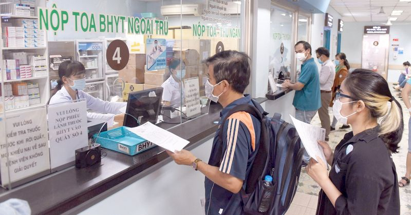
Mở rộng phạm vi bảo hiểm y tế: Thêm nhiều thuốc, dịch vụ được quỹ chi trả 🔗 MOI
Người dân khám bệnh có BHYT tại một bệnh viện ở TP.HCM - Ảnh: DUYÊN PHAN Đây là một trong những nội dung trọng tâm tại Kế hoạch hành động thực hiện chỉ thị số 52-CT/TW ngày 3-10-2025 của Ban Bí thư về
Xử lý cụ ông 76 tuổi thường xuyên chia sẻ, đăng tải bài viết xúc phạm cảnh sát giao thông 🔗 MOI
Công an làm việc, xử lý hành vi vi phạm của ông H. - Ảnh: Công an cung cấp Ngày 14-5, Công an TP Hà Nội cho biết Phòng An ninh mạng và phòng, chống tội phạm sử dụng công nghệ cao vừa xử lý một người c
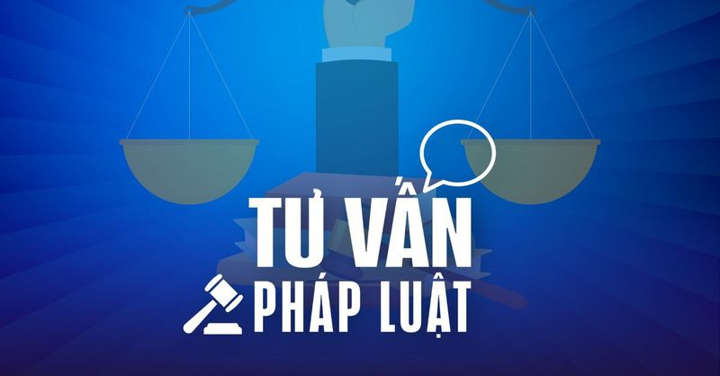
Khám bệnh, chữa bệnh nghiện ma túy có được hưởng BHYT? 🔗 MOI
Anh Hứa Thanh Tùng (tỉnh Khánh Hòa) hỏi. * Luật gia Phạm Văn Chung (Sở Tư pháp tỉnh Quảng Ngãi) trả lời: Luật gia Phạm Văn Chung (Sở Tư pháp tỉnh Quảng Ngãi) - Theo quy định tại điều 23 Luật Bảo hiểm

Tuyên án tù chung thân đối với Đào Minh Quân về tội khủng bố, hoạt động nhằm lật đổ chính quyền 🔗 MOI
Tuyên án tù chung thân đối với Đào Minh Quân về tội khủng bố, hoạt động nhằm lật đổ chính quyền nhân dân - Ảnh: TTXVN Bị cáo Đào Minh Quân - đối tượng cầm đầu tổ chức "Chính phủ quốc gia Việt Nam lâm

Ấn phẩm 🔗 MOI
Tổng Biên tập: TS. Phạm Thu Phong Phó Tổng Biên tập: TS. Đỗ Văn Hải, TS.

Báo cáo tài chính doanh nghiệp 🔗 MOI
Quý 1/2026, VNG báo lãi sau thuế 125 tỷ đồng, trong khi cùng kỳ năm trước lỗ 15 tỷ đồng. Đây là mức lãi theo quý cao nhất mà VNG ghi nhận kể từ quý 2/2021..

Đổi mới công tác xây dựng và thi hành pháp luật: Dấu ấn 1 năm thực hiện Nghị quyết số 66-NQ/TW 🔗 MOI
Tài chính Trong tiến trình phát triển đất nước, cải cách thể chế luôn được xác định là khâu đột phá để khơi thông nguồn lực và nâng cao năng lực cạnh tranh quốc gia. Trên nền tảng những chuyển động mạ

Chính phủ với công dân 🔗 MOI
14/05/2026 (Chinhphu.vn) - Ông Nguyễn Hữu Lợi (Quảng Trị) hỏi, học sinh cấp THPT thường trú ở xã đặc biệt khó khăn vùng bãi ngang nhưng học ở xã thuận lợi thì... 14/05/2026 (Chinhphu.vn) - Bà Hoàng Th
Đẩy mạnh số hóa quản lý an toàn lao động 🔗 MOI
Ông Nguyễn Văn Hải, Ủy viên Ban Thường vụ LĐLĐ TP HCM, đánh giá nếu tiếp tục quản lý an toàn - vệ sinh lao động (AT-VSLĐ) theo phương thức thủ công, thông tin từ cơ sở lên cấp trên sẽ chậm trễ, phân t
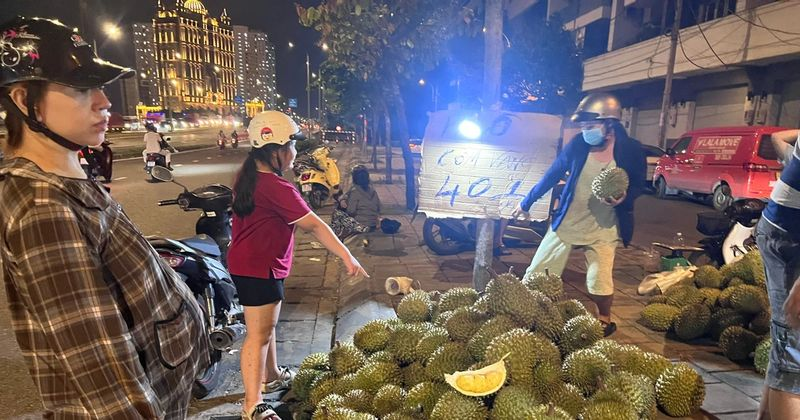
Người dân TPHCM đổ xô ‘săn’ sầu riêng giá siêu rẻ 🔗 MOI
Chiều muộn 14/5, trên tuyến đường Võ Văn Kiệt (phường Bình Phú, TPHCM ), hàng trăm quả sầu riêng được một tiểu thương đổ kín vỉa hè, treo bảng đồng giá 40.000 đồng/kg khiến nhiều người đi đường bất ng
Đào Minh Quân, Lisa Phạm bị tuyên án tù chung thân 🔗 MOI
Chiều 14/5, sau một ngày xét xử và nghị án, TAND TPHCM đã tuyên án sơ thẩm đối với Đào Minh Quân - đối tượng cầm đầu tổ chức “Chính phủ quốc gia Việt Nam lâm thời” cùng các đồng phạm về các tội “Khủng
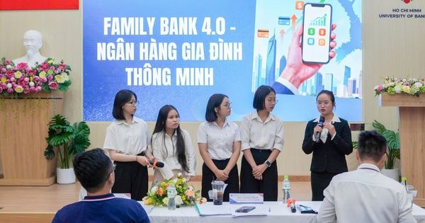
Rộng cửa đón nhân tài 🔗 MOI
Việc sửa đổi Nghị định 179/2024 (quy định chính sách thu hút, trọng dụng người có tài năng làm việc trong cơ quan, tổ chức, đơn vị của Đảng, Nhà nước, MTTQ Việt Nam và các tổ chức chính trị - xã hội)
Iraq phê chuẩn chính phủ mới, chấm dứt nhiều tháng bế tắc chính trị 🔗 MOI
Facebook Twitter Lưu bài viết Bản in Copy link Quốc hội Iraq ngày 14/5 đã phê chuẩn nội các của Thủ tướng mới Ali al-Zaidi, chấm dứt nhiều tháng bế tắc chính trị sau cuộc bầu cử hồi tháng 11 năm ngoái
Chính trường Anh lại bên bờ hỗn loạn 🔗 MOI
Ông Wes Streeting từ chức Bộ trưởng Y tế Anh. (Ảnh: Reuters) Diễn biến này xảy ra sau khi Công đảng nhận kết quả thảm hại trong cuộc bầu cử địa phương tuần trước, khiến nước Anh rơi vào khủng hoảng ch
Hoàn thiện thể chế như một "chu trình sống" 🔗 MOI
Sáng 13/5, tại Hà Nội, Tổng Bí thư, Chủ tịch nước Tô Lâm chủ trì buổi làm việc về tổ chức, hoạt động của Ban Chỉ đạo Trung ương về hoàn thiện thể chế, pháp luật và Ban Chỉ đạo cải cách tư pháp Trung ư
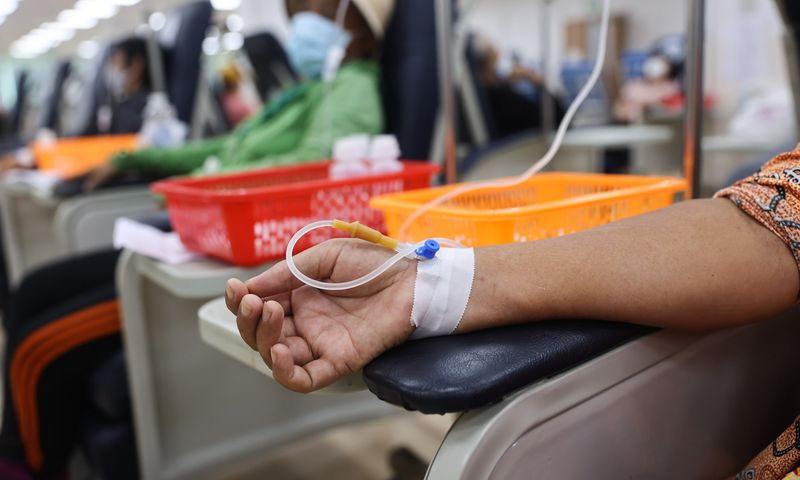
Cú sốc mắc ung thư của những người trẻ sống lành mạnh 🔗 MOI
Anh Hà Mạnh Tuấn, 36 tuổi, ở Đống Đa (Hà Nội) vốn là hình mẫu của việc chăm sóc sức khỏe chủ động. Ở tuổi sung sức, anh ăn uống khoa học, tập HIIT, Tabata, thiền, khí công và từng chinh phục cột mốc 4
Cậu bé từng nghiện game làm đủ nghề để cứu mẹ 🔗 MOI
Trong một công viên ở quận Hoài Nhu, Bắc Kinh đầu hè, He Zihao dìu mẹ, bà Gao Wenxia, tập đi sau đợt hóa trị. Trở về phòng trọ, cậu nấu bữa trưa. Đây là lịch trình hàng ngày của thiếu niên 18 tuổi kể
Ông Nguyễn Mạnh Cường làm Chủ tịch Ủy ban Trẻ em TPHCM 🔗 MOI
UBND TPHCM ban hành Quyết định về việc tổ chức lại Ủy ban Trẻ em TPHCM. Theo đó, tổ chức lại Ủy ban Trẻ em TPHCM dưới hình thức hợp nhất Ủy ban Trẻ em TPHCM (cũ) và Ban Chỉ đạo Chương trình hành động
CHÍNH QUYỀN SỐ CHẠM TỚI LÒNG DÂN: Tạo thế trận an ninh vững chắc trên không gian mạng 🔗 MOI
Góp phần bảo đảm an ninh trật tự trên môi trường số. Fanpage Công an phường Buôn Hồ, tỉnh Đắk Lắk hiện có hơn 20.000 người theo dõi. Sở dĩ trang này có lượt theo dõi, tương tác khá lớn là do cách truy
Tin tức đặc biệt trên báo in Thanh Niên 15.5.2026 🔗 MOI
Hà Nội cho thuê vỉa hè: Có 'bình mới rượu cũ'? Hà Nội dự kiến thí điểm cho thuê một phần lòng đường, vỉa hè với giá cao nhất là 45.000 đồng/m 2 /tháng để phát triển kinh tế đô thị, kinh tế đêm. Song,
Loạt trường mở cổng nhận minh chứng xét tuyển đại học 🔗 MOI
M Ở CỔNG NHẬN HỒ SƠ TRỰC TUYẾN Trường ĐH Kinh tế - Luật (ĐH Quốc gia TP.HCM) đã chính thức mở cổng tiếp nhận hồ sơ minh chứng xét tuyển đại học (ĐH) chính quy năm 2026. Thời gian tiếp nhận hồ sơ trực
Miu Lê xin lỗi, bày tỏ sự xấu hổ và ân hận 🔗 MOI
Miu Lê và công ty quản lý tiếp tục phối hợp cơ quan điều tra, tuân thủ nghiêm quy định pháp luật Tối 14-5, KIM Entertainment - công ty quản lý Miu Lê, thông qua Fanpage chính thức đã đưa ra thông cáo
Biến cố gây chấn động eo biển Hormuz năm 2019 🔗 MOI
Lời tòa soạn Không chỉ là tuyến hàng hải chiến lược hàng đầu thế giới, eo biển Hormuz cũng là khu vực nổ ra nhiều cuộc xung đột quân sự. Những sự kiện được liệt kê dưới đây cho thấy eo biển Hormuz từn
Ông Lavrov nói về 'toan tính khác' đằng sau cuộc chiến Iran 🔗 MOI
(PLO)- Ngoại trưởng Nga Sergey Lavrov cáo buộc việc Mỹ và Israel phát động chiến dịch quân sự vào Iran là nhằm ngăn Tehran bình thường hóa quan hệ với các nước Ả Rập. Ngoại trưởng Nga Sergey Lavrov mớ
NSND Lan Hương biết rõ người phụ nữ vu khống vợ chồng mình 🔗 MOI
- Khán giả nhới tới NSND Lan Hương trong vai bà mẹ chồng ghê gớm trong "Sống chung với mẹ chồng" và ấn tượng với vai bà mẹ hiền lành, nhân hậu của chị trong "Bước chân vào đời". Nhiều diễn viên nói đó
Lời 'gan ruột' của bác sĩ nhiễm HIV từ năm thứ 5 đại học y 🔗 MOI
Lối rẽ về nghề từ khi là người có H Ở thời điểm đang là sinh viên năm thứ 5 của Đại học Y Dược TPHCM, chàng trai Nguyễn Tấn Thủ (sinh năm 1986) đi thực tập tại Bệnh viện Bệnh Nhiệt đới TPHCM thì phát
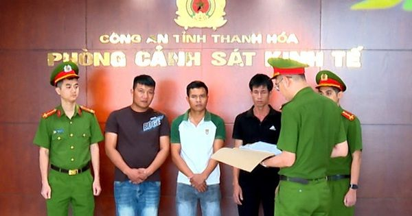
Khởi tố 3 người đàn ông mua heo bị dịch tả về giết mổ bán ra thị trường 🔗 MOI
Ngày 14-5, Phòng Cảnh sát kinh tế Công an tỉnh Thanh Hóa đã tống đạt quyết định khởi tố vụ án, khởi tố bị can, bắt tạm giam Lê Mạnh Đáng (SN 1990, ngụ xã Thọ Bình, tỉnh Thanh Hóa); khởi tố bị can, cấm
Carrick được đề cử HLV hay nhất Ngoại hạng Anh 🔗 MOI
Trong 15 trận dẫn dắt tại giải Ngoại hạng Anh, Carrick giúp Man Utd thắng 10, hòa 3, thua 2, chắc suất trong top 5 để trở lại Champions League sau hai mùa vắng bóng. Nếu tính riêng giai đoạn Carrick n
Điểm nóng xung đột ngày 15-5: Tại sao Iran "bực mình" UAE đến thế? 🔗 MOI
Trong các thông điệp cứng rắn, Iran đang có xu hướng nhắm vào UAE và cảnh báo sẽ đáp trả mạnh mẽ vào nước này nếu Mỹ và Israel nối lại xung đột. “Danh hiệu ‘láng giềng’ của UAE hiện đã bị gỡ bỏ, thay
Tử vi ngày 15 tháng 5: Con giáp nào may mắn hôm nay? 🔗 MOI
Tuổi Tí trong tử vi ngày 15 tháng 5 có thể dành nhiều thời gian hơn để nghĩ về gia đình hoặc những mối quan hệ thân thiết. Một cuộc trò chuyện đơn giản cũng giúp bạn thấy nhẹ lòng hơn. Tài lộc ổn định
Bác sĩ cảnh báo nguy cơ từ miếng dán chống say tàu xe ở trẻ nhỏ 🔗 MOI
Theo bác sĩ chuyên khoa 2 Nguyễn Hoàng Thạch, Phó trưởng Khoa Nhi và Hồi sức sơ sinh, Bệnh viện đa khoa An Sinh (TP.HCM), miếng dán chống say tàu xe thường chứa Scopolamine (hyoscine), được dán sau ta
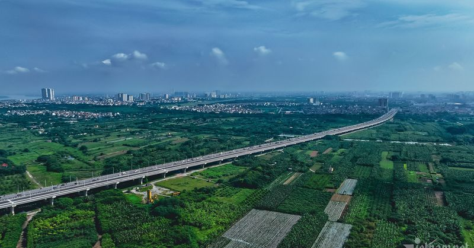
Hà Nội: Từ 'quay lưng ra sông' đến khát vọng kỳ tích sông Hồng 🔗 MOI
Cơ hội lịch sử Suốt nhiều thập niên qua, Hà Nội phát triển theo cách “quay lưng ra sông”. Vì thế, sông Hồng tồn tại như một ranh giới địa lý hơn là trung tâm của đời sống đô thị. Dù nằm ở lõi trung tâ
Nguồn gốc ngày Quốc tế gia đình 15.5 từ đâu? Lịch âm hôm nay có đặc biệt? 🔗 MOI
Dương lịch hôm nay là thứ sáu, ngày Quốc tế gia đình , đánh dấu năm 2026 trải qua ngày thứ 134. Theo lịch âm hôm nay 15.5 là ngày 29 tháng 3, theo cách gọi can chi là ngày Kỷ Sửu, tháng Nhâm Thìn, năm
"Sa mạc thông tin": Vấn đề mang tính toàn cầu 🔗 MOI
Hiện tượng "sa mạc thông tin" (news desert) từng được nhắc đến chủ yếu ở Mỹ, nhưng vài năm gần đây đã trở thành một vấn đề toàn cầu. Khái niệm này dùng để chỉ những khu vực – có thể là nông thôn, ngoạ
Chiến sự tiếp diễn tại Trung Đông giữa tín hiệu đàm phán mới 🔗 MOI
Israel - Li Băng đàm phán Hôm qua, quân đội Israel thông báo đã tấn công các mục tiêu của Hezbollah trên khắp miền nam Li Băng sau khi phát cảnh báo sơ tán, theo AFP. Cùng ngày, nhiều dân thường Israe
Tỷ phú Phạm Nhật Vượng lập kỷ lục chưa từng có, lớn hơn 10% GDP Việt Nam 🔗 MOI
TIN MỚI Trong phiên VN-Index lập đỉnh mới, cổ phiếu Vingroup (mã VIC) cũng bứt phá mạnh, tăng lên sát mốc 230.000 đồng/cp – mức cao nhất lịch sử. Đà tăng mạnh đưa vốn hóa Vingroup tiến gần ngưỡng 1,8
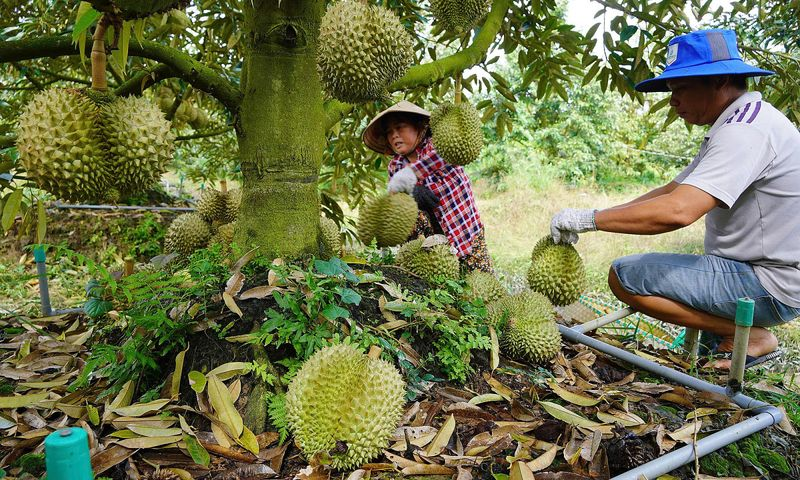
Lỗ hổng khiến 'trái cây tỷ đô' dễ nhiễm chất cấm 🔗 MOI
Sầu riêng được xem là "trái cây tỷ đô" của Việt Nam, kim ngạch xuất khẩu liên tục tăng mạnh. Tuy nhiên từ cuối năm 2024, ngành hàng này gặp khó khi thị trường Trung Quốc siết kiểm soát dư lượng cadimi
Sinner phá kỷ lục của Djokovic về chuỗi trận thắng dài nhất ở ATP Masters 1000 🔗 MOI
Jannik Sinner lập kỷ lục về chuỗi trận thắng dài nhất ở cấp độ ATP Masters 1000 - Ảnh: ATP Tour Tay vợt người Ý Jannik Sinner đã dễ dàng đánh bại đối thủ người Nga Andrey Rublev với tỉ số 2-0 (6-2, 6-
Truyền thông quốc tế: 'Việt Nam đã sẵn sàng giành vé đến World Cup 2030' 🔗 MOI
Bóng đá Việt Nam đang có một lứa cầu thủ trẻ tài năng, sẵn sàng giành vé đến World Cup 2030 - Ảnh tư liệu "Bóng đá Việt Nam - một thập niên vàng với các kỳ World Cup", chuyên trang ASEAN Football giật
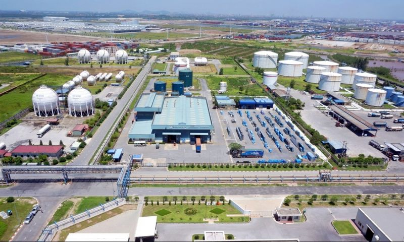
Công bố bản đồ hạ tầng công nghiệp hỗ trợ vùng Đồng bằng sông Hồng 🔗 MOI
Ngày 14/5 tại Hà Nội, Hiệp hội Công nghiệp hỗ trợ Việt Nam (VASI) phối hợp với DTJ Industrial công bố “Bản đồ hạ tầng công nghiệp hỗ trợ VASI”, cung cấp dữ liệu tổng quan về quỹ đất, hạ tầng công nghi
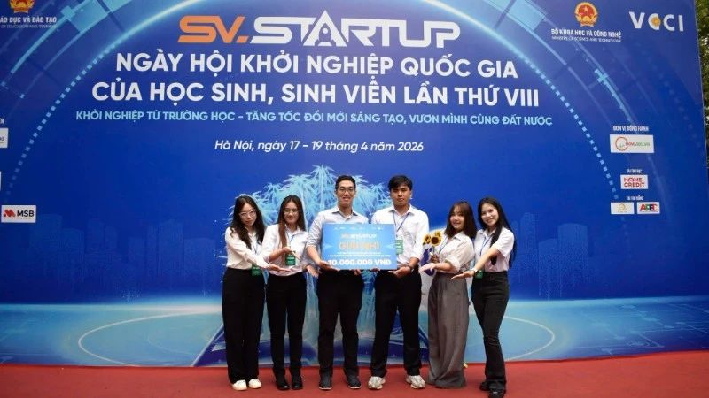
Khởi nghiệp sáng tạo bắt đầu từ những thay đổi nhỏ 🔗 MOI
Nghị quyết số 86/NQ-CP ngày 5/4/2026 về Chiến lược quốc gia về khởi nghiệp sáng tạo đã đưa ra một cách tiếp cận rộng hơn. Chiến lược xác định quốc gia khởi nghiệp sáng tạo là nơi mọi công dân đều có c
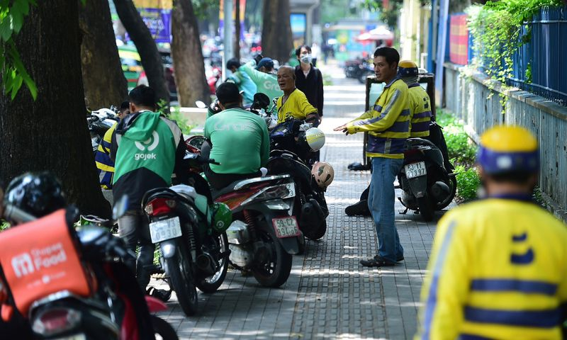
Tài xế công nghệ: Nạn nhân của bạo hành và thuật toán 🔗 MOI
Ngày 10/5, một nam tài xế giao hàng ở phường Cần Thơ bị khách hàng hành hung , đánh chảy máu mũi sau khi từ chối yêu cầu mở hộp tông đơ để thử lên thú cưng. Hôm sau, người mua bị công an triệu tập để
Giáo hoàng Leo XIV lên án châu Âu tăng chi tiêu quân sự 🔗 MOI
(PLO)- Giáo hoàng Leo XIV nhấn mạnh rằng “những bi kịch của thế kỷ XX không được phép bị lãng quên”. Ngày 14-5, Giáo hoàng Leo XIV đã lên án việc chi tiêu quân sự của châu Âu ngày càng tăng, cho rằng
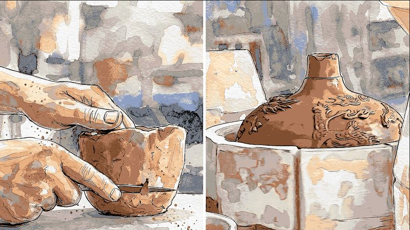
Gốm Bát Tràng: Thủ công độc bản hay công nghệ 'nhân bản'? 🔗 MOI
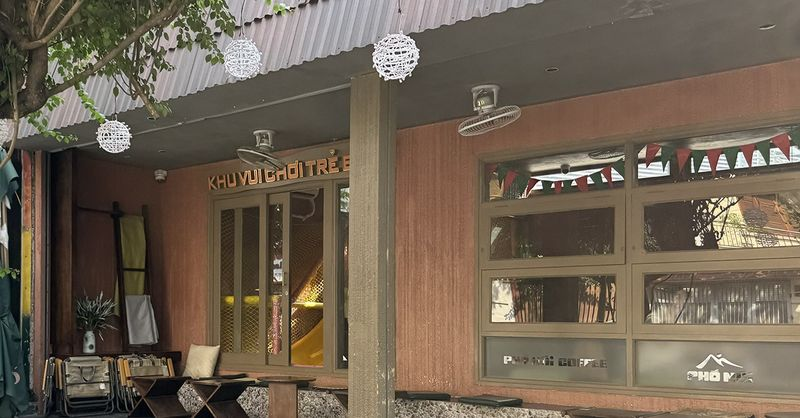
Không còn được ngồi vỉa hè, nhiều quán cà phê Hà Nội xoay cách chưa từng có 🔗 MOI
Phải mất thêm một khoản tiền đầu tư lớn nhưng chủ quán cà phê Lofi Lab (Cầu Giấy) đã chọn phương án tự tạo vỉa hè ngay trên phần mặt bằng của mình. Để hiện thực hóa ý tưởng này, quán đã làm việc với đ
Thanh tra 4 dự án cần tháo gỡ khó khăn vướng mắc ở Đắk Lắk 🔗 MOI
Chiều 14/5, Thanh tra tỉnh Đắk Lắk công bố quyết định thanh tra chuyên đề đối với các công trình, dự án có khó khăn, vướng mắc, tồn đọng kéo dài trên địa bàn tỉnh được cập nhật trên hệ thống 751. Quan
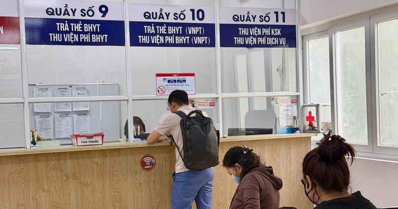
Báo Pháp Luật TP. Hồ Chí Minh 🔗 MOI
(PLO)- Nhiều công ty mất người giỏi chỉ vì chậm đóng bảo hiểm; nhân viên sẽ không dám gắn bó với nơi mà quyền lợi cơ bản còn không được đảm bảo. Thông tin doanh nghiệp chậm đóng, trốn đóng BHYT sẽ phả
Dragon Capital: Giá cổ phiếu còn dưa địa để phản ánh sát hơn nền tảng doanh nghiệp 🔗 MOI
TIN MỚI Giá cổ phiếu vẫn còn dư địa tăng Trong tháng 4, một trong những thông tin đáng chú ý nhất trong tháng là việc FTSE Russell xác nhận nâng hạng Việt Nam lên nhóm Thị trường mới nổi thứ cấp vào n
Ly cocktail có độc của người vợ bí mật nuôi tình nhân 🔗 MOI
Trong mắt người xung quanh, Kouri Richins là góa phụ đau buồn cố gắng giữ vững tinh thần để chăm sóc ba con trai nhỏ sau cái chết đột ngột của chồng vào tháng 3/2022. Cô nói rằng chồng mình, Eric Rich
Lịch thi đấu hạng nhất rất nóng: Trường Tươi Đồng Nai và Bắc Ninh coi chừng 'cạm bẫy' 🔗 MOI
Lúc này, sự chú ý vẫn sẽ đổ dồn về cuộc đua vô địch giữa Trường Tươi Đồng Nai và Bắc Ninh . Thầy trò HLV Paulo Foiani rút ngắn khoảng cách với đại diện Đông Nam bộ xuống chỉ còn 3 điểm sau trận thắng
Tin tức sáng 15-5: Không đăng ký vận tải hành khách nhưng chở người thu tiền sẽ bị phạt tới 14 triệu 🔗 MOI
Xử phạt vi phạm giao thông tại Hà Nội - Ảnh: H.QUANG Đề xuất bổ sung hành vi vi phạm lĩnh vực giao thông bị phạt tới 14 triệu đồng Bộ Tư pháp đã công bố hồ sơ thẩm định dự thảo nghị định sửa đổi, bổ s

Công cụ AI liên quan Anthropic tự ý xóa sạch dữ liệu của một doanh nghiệp trong 9 giây 🔗 MOI
Hành động phá hoại của công cụ lập trình AI đã khiến khách hàng của Công ty PocketOS rơi vào tình thế khó khăn - Ảnh TED HSU Báo Guardian đưa tin một công cụ lập trình vận hành bằng trí tuệ nhân tạo (
Chân dung doanh nghiệp 🔗 MOI
ĐHĐCĐ thường niên 2026 của Sacombank ghi nhận nhiều nội dung lớn: cập nhật tiến độ tái cơ cấu, nợ xấu ở mức 5,01%, kế hoạch lợi nhuận thận trọng.
Tích hợp hồ sơ học tập suốt đời của cá nhân trên VNeID 🔗 MOI
Facebook Twitter Lưu bài viết Bản in Copy link Nghị định số 88/2026/NĐ-CP ngày 28/3/2026 của Chính phủ quy định quản lý dữ liệu giáo dục và đào tạo có hiệu lực từ ngày 15/5/2026. Nghị định quy định: C
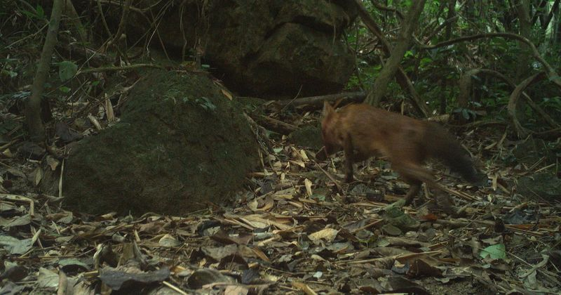
Phát hiện chó sói lửa, thú săn mồi bí ẩn bậc nhất châu Á qua bẫy ảnh 🔗 MOI
Chia sẻ với Thanh Niên , ông Nguyễn Văn Sinh, Giám đốc Khu bảo tồn thiên nhiên Pù Hoạt ( Nghệ An ) cho biết mới đây từ kết quả điều tra, nghiên cứu bằng công nghệ bẫy ảnh, các nhà khoa học đã ghi nhận
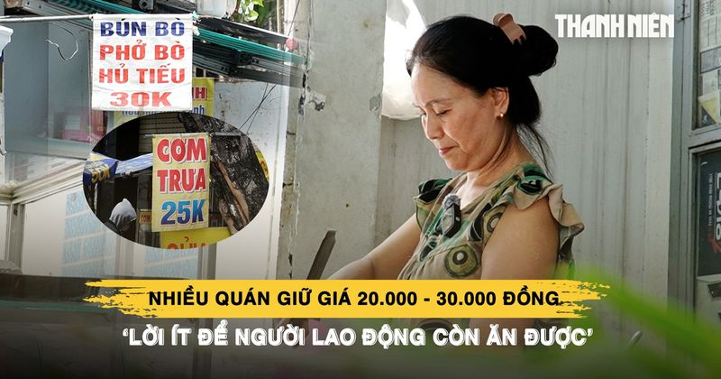
Chi phí leo thang, nhiều quán giữ giá 20.000 - 30.000 đồng 🔗 MOI
Trong lúc giá thực phẩm, nguyên liệu liên tục tăng, nhiều quán ăn bình dân ở TP.HCM vẫn cố giữ mức giá cũ suốt nhiều năm. Với họ, lời ít một chút nhưng đổi lại người lao động, thợ hồ, tài xế công nghệ

Cụ thể hóa quy định về tự chủ tài chính đại học 🔗 MOI
Cùng với đó là Chương trình trọng điểm quốc gia đào tạo tiến sĩ toàn thời gian trên Cổng thông tin điện tử của bộ để lấy ý kiến góp ý rộng rãi. Việc xây dựng Nghị định nêu trên nhằm cụ thể hóa Nghị qu
Luật cho phép người lạ chiếm hữu nhà ở Florida 🔗 MOI
Nhà báo thể thao Mỹ Dan Le Batard hồi tháng 3 thông báo với Sở Cảnh sát Miami Shores, bang Florida, về việc một người đàn ông "sống chui" trong căn nhà thuộc của gia đình anh ở khu vực này. Khi đến nơ
Đặc sắc Lễ hội Làng Sen 🔗 MOI
Lễ hội Làng Sen năm 2026, chào mừng kỷ niệm 136 năm Ngày sinh Chủ tịch Hồ Chí Minh (19.5.1890 - 19.5.2026), được tổ chức với nhiều hoạt động quy mô lớn, gồm phần lễ cùng chuỗi chương trình văn hóa, du
Phát triển đồng bộ hạ tầng số, chuyển đổi số toàn diện, tạo thuận lợi tối đa cho người dân, doanh nghiệp 🔗 MOI
Thủ tướng Chính phủ Lê Minh Hưng chủ trì Phiên họp Ban Chỉ đạo về phát triển khoa học công nghệ, đổi mới sáng tạo, chuyển đổi số và Đề án 06 Ngày 11 tháng 5 năm 2026, tại Trụ sở Chính phủ, Thủ tướng C
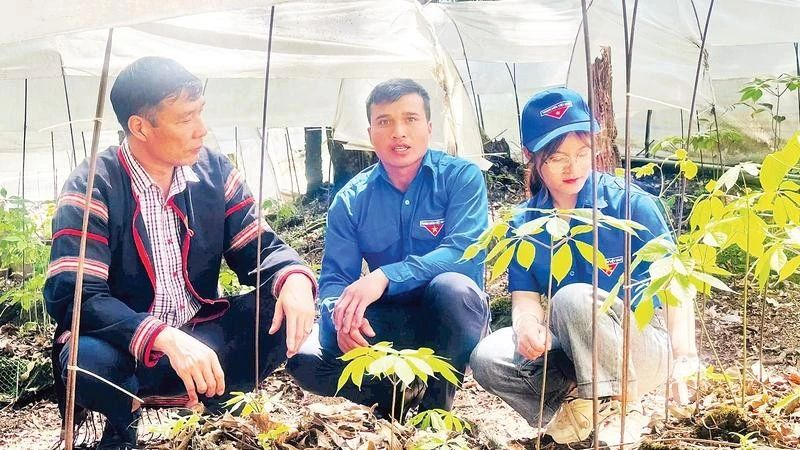
Người trẻ khởi nghiệp với sâm Ngọc Linh 🔗 MOI
Nắm bắt cơ hội ấy, nhiều thanh niên vùng cao tỉnh Quảng Ngãi đã mạnh dạn đầu tư sản xuất nông nghiệp sạch, khởi nghiệp với cây dược liệu có giá trị kinh tế cao. Trong đó, sâm Ngọc Linh được xem là cây
🔗 MOI
Trường Quốc tế Việt Nam - Phần Lan là thành viên của Trường Đại học Tôn Đức Thắng. Nhà trường vinh dự được Tổ chức Tú tài Quốc tế công nhận là trường IB và ủy quyền giảng dạy Chương trình Tú tài Quốc

Coi chừng nhiễm liên cầu lợn vì thói quen ăn tiết canh, thịt tái 🔗 MOI

Làm thế nào để lên thực đơn dinh dưỡng cho gia đình nhiều thế hệ? 🔗 MOI

Khám tiền hôn nhân ở nam và nữ khác nhau như thế nào? 🔗 MOI

Sử dụng thuốc tăng cường sinh lý để kéo dài 'cuộc yêu', có nên không? 🔗 MOI

Chồng không tinh trùng nhưng vợ vẫn sinh được con 'chính chủ', vì sao? 🔗 MOI

Viêm da tiết bã ở trẻ em khác gì ở người lớn? 🔗 MOI

Xóa xăm có xóa được triệt để hay không? 🔗 MOI

6 dấu hiệu thầm lặng cảnh báo đột quỵ trước 1 tháng 🔗 MOI
Theo The Times of India, 6 dấu hiệu của cơ thể cảnh báo trước 1 tháng khi đột quỵ sắp xảy ra: 1. Chóng mặt bất thường Cảm giác chóng mặt thường được cho là do bỏ bữa, mất nước hoặc đứng dậy quá nhanh.
🔗 MOI
Tục ngữ đúc kết kinh nghiệm trong ẩm thực của ông cha ta này là gì? > Xem đáp án Đáp án "Vịt già gà tơ" là câu tục ngữ đúc kết kinh nghiệm trong ẩm thực của ông cha ta. Theo đó, vịt già thường chắc th

Hệ thống Bảo hiểm xã hội Việt Nam: Tăng tốc thực hiện các chỉ tiêu nhiệm vụ năm 2025 🔗 MOI
Theo Bảo hiểm xã hội (BHXH) TP. Hồ Chí Minh, mặc dù năm 2025 gặp một số khó khăn, tuy nhiên tập thể cán bộ viên chức, người lao động BHXH TP. Hồ Chí Minh quyết tâm hoàn thành vượt chỉ tiêu giao, với s
Chủ tịch VFF nhắn nhủ U17 Việt Nam trước 'cơn mưa lời khen' trên mạng xã hội 🔗 MOI
Chủ tịch VFF Trần Quốc Tuấn nhắc nhở U17 Việt Nam giữ đôi chân trên mặt đất - Ảnh: VFF Ngày 14-5, Chủ tịch VFF Trần Quốc Tuấn đã đến thăm đội tuyển U17 Việt Nam . Ông nhắn nhủ đoàn quân HLV Cristiano
50 năm thành phố mang tên Bác 🔗 MOI
Công ty quản lý Miu Lê: Đây là bài học đắt giá, xin lỗi người hâm mộ 🔗 MOI
Ca sĩ Miu Lê khiến mạng xã hội bùng nổ vì bị bắt quả tang khi đang sử dụng ma túy - Ảnh: FBNV Tối 14-5, công ty quản lý của ca sĩ Miu Lê đăng thông tin liên quan đến cô trên fanpage chính thức của côn
Lịch trực tiếp V-League vòng 23: Công An Hà Nội đấu Thanh Hóa 🔗 MOI
Lịch trực tiếp V-League vòng 23, tâm điểm là Công An Hà Nội đấu Thanh Hóa - Đồ họa: AN BÌNH CLB Công An Hà Nội sẽ lên ngôi vô địch V-League 2025-2026 nếu đánh bại Đông Á Thanh Hóa (19h15 ngày 17-5) ở
Khởi tố 3 bị can trong vụ ca sĩ Miu Lê sử dụng ma túy ở Cát Bà 🔗 MOI
Ca sĩ Miu Lê - Ảnh: XUÂN HOA Theo báo Bảo Vệ Pháp Luật (cơ quan của Viện Kiểm sát nhân dân tối cao), thông tin ban đầu: khoảng 12h30 ngày 10-5-2026, Công an đặc khu Cát Hải kiểm tra cơ sở lưu trú TiTi
Thời tiết hôm nay 15-5: Cả nước vẫn nắng nóng diện rộng, có nơi 38 độ C 🔗 MOI
Hôm nay 15-5, thời tiết cả nước vẫn nắng nóng diện rộng - Ảnh: T.L Trung tâm Dự báo khí tượng thủy văn quốc gia cho biết hôm nay 15-5, thời tiết Bắc Bộ nắng nóng đến nắng nóng gay gắt. Nhiệt độ cao nh

Nhật Bản ra mắt 'máy giặt người' trị giá 385.000 USD, làm sạch từ đầu đến chân trong 15 phút 🔗 MOI
Thống đốc Yoshimura Yoshifumi của tỉnh Osaka trải nghiệm máy giặt người Mirai - Ảnh: SISA COMMUNICATION YOUTUBE Theo trang Interesting Engineer ngày 30-11, Công ty Science Inc. của Nhật Bản vừa chính

Hoàn thiện khung khổ pháp lý về tiết kiệm 🔗 MOI
Pháp luật Trong công cuộc phòng, chống lãng phí hiện nay khó có thể tránh khỏi những khó khăn, nguy hiểm, ảnh hưởng tới người đấu tranh chống lãng phí. Do đó, việc bảo vệ người cung cấp thông tin phát

Cải cách tài chính công thúc đẩy tăng trưởng 🔗 MOI
Pháp luật Trong những năm qua, cùng với việc đẩy mạnh tiến trình xây dựng Nhà nước pháp quyền Việt Nam xã hội chủ nghĩa, công tác xây dựng và hoàn thiện hệ thống pháp luật đã đạt được nhiều thành tựu

CEO có quý lãi cao nhất 3 năm 🔗 MOI
Động lực tăng trưởng lợi nhuận của CEO chủ yếu đến từ việc cải thiện doanh thu, ngoài ra còn được đóng góp bởi lãi thoái vốn đầu tư vào công ty con. Trụ sở CEO Group tại Hà
bảng giá truyền thông 🔗 MOI

Thông cáo báo chí 🔗 MOI
Thông cáo báo chí 14/05/2026 (Chinhphu.vn) - Văn phòng Chính phủ vừa có Thông cáo báo chí chỉ đạo, điều hành của Chính phủ, Thủ tướng Chính phủ ngày 14/5/2026. 13/05/2026 (Chinhphu.vn) - Văn phòng Chí
Tổng Thư ký Liên hợp quốc kêu gọi cải tổ hệ thống tài chính toàn cầu 🔗 MOI
Facebook Twitter Lưu bài viết Bản in Copy link Tổng Thư ký Liên hợp quốc Antonio Guterres đã kêu gọi cải tổ hệ thống tài chính toàn cầu, cho rằng cấu trúc hiện nay đang duy trì những bất công tồn tại
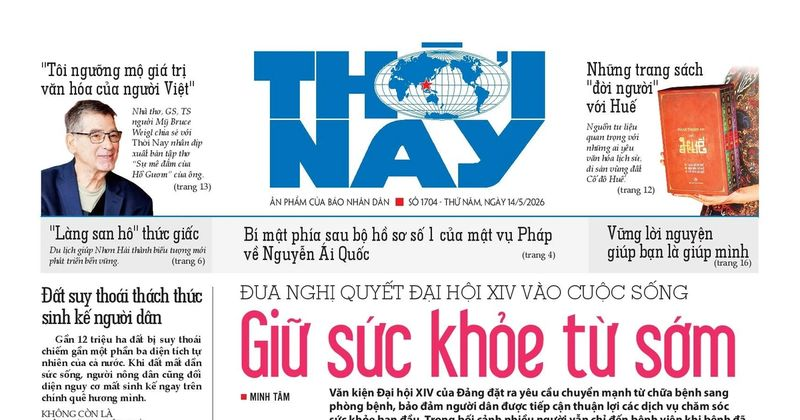
BÁO THỜI NAY SỐ 1704 🔗 MOI
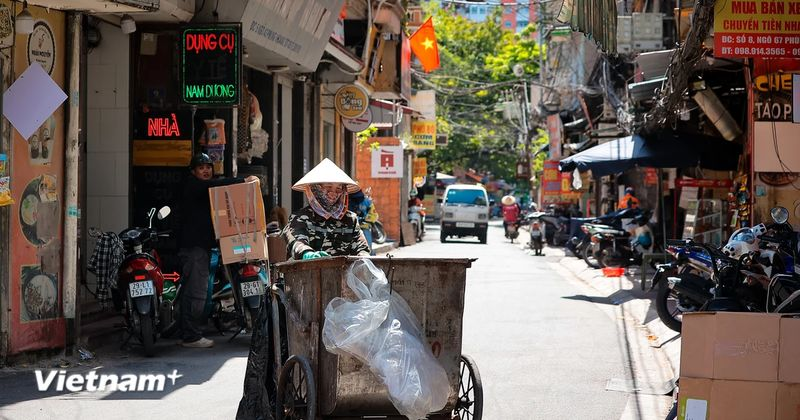
Thời tiết ngày 15/5: Nắng nóng gay gắt bao trùm Bắc Bộ và Trung Bộ 🔗 MOI
Facebook Twitter Lưu bài viết Bản in Copy link Theo Trung tâm Dự báo Khí tượng Thủy văn Quốc gia, ngày và đêm 15/5, nắng nóng gay gắt bao trùm Bắc Bộ và Trung Bộ, nhiều nơi nhiệt độ vượt 38 độ C. Tron
"Công chúa nhạc pop" Olivia Rodrigo gây phẫn nộ 🔗 MOI
Làn sóng phẫn nộ bùng lên sau đêm diễn ngày 8.5, khi ngôi sao nhạc pop 23 tuổi diện một chiếc váy babydoll ngắn màu trắng với họa tiết hoa, đính nơ và pha lê của thương hiệu Pháp Generation78. Cô kết
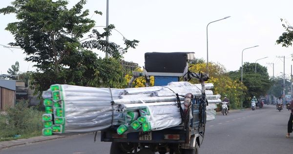
Tập trung xử lý xe tự chế chở hàng cồng kềnh 🔗 MOI
đi đường. Các tấm tôn dài sắc nhọn hoặc thanh sắt vượt quá kích thước, không che chắn cẩn thận đe dọa trực tiếp đến tính mạng và tài sản người dân. Dù các đơn vị thuộc Phòng CSGT tích cực xử lý, tình
Lý do Hoa hậu Phan Thị Mơ vẫn độc thân ở tuổi 36 🔗 MOI
Phan Thị Mơ làm giám khảo Miss & Mister Fitness Supermodel World 2026 Chiều 14.5, Hoa hậu Phan Thị Mơ xuất hiện tại sự kiện công bố vương miện của cuộc thi Miss & Mister Fitness Supermodel World 2026
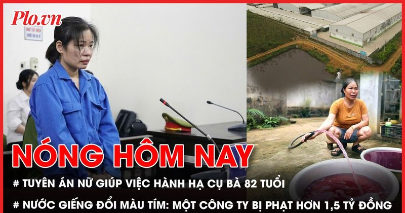
Báo Pháp Luật TP. Hồ Chí Minh 🔗 MOI
(PLO)- Tuyên án nữ giúp việc hành hạ cụ bà 82 tuổi; Lời khai của bạn gái bị cáo Bùi Đình Khánh tại tòa; Vụ nước giếng đổi màu tím: Một công ty bị phạt hơn 1,5 tỷ đồng;...
Châu Dã diện 'váy bồ câu' của Phan Huy trên thảm đỏ Cannes 🔗 MOI
Châu Dã mặc đầm Phan Huy ở Cannes Châu Dã dự buổi ra mắt phim Fatherland , ngày 14/5. Video: Sohu Cô tham gia với tư cách đại sứ thương hiệu tài trợ sự kiện. Châu Dã gia nhập làng giải trí năm 2017, n
Hàng loạt trường đại học tăng học phí 🔗 MOI
Năm học 2026 - 2027, Trường Đại học (ĐH) Y Hà Nội dự kiến mức thu học phí ngành y khoa là 74.800.000 đồng, ngành răng - hàm - mặt 80.000.000 đồng. Các ngành thuộc hệ cử nhân có mức học phí từ 19.100.0
Báo động đỏ nghệ sĩ Việt dùng chất cấm 🔗 MOI
Cạm bẫy ăn mòn giới giải trí Ngày 11/5, Công an xã Cát Hải (TP Hải Phòng) thông tin nhóm đối tượng có hành vi sử dụng trái phép chất ma túy, trong đó có Lê Ánh Nhật (tức ca sĩ Miu Lê). Thông tin Miu
Du sơn ngoạn thủy: 'Miền An Hà là đẹp hơn cả' 🔗 MOI
"Nước biếc với trời xanh lẫn sắc" Cảnh sắc Hà Tiên được Cửu Long Giang ngợi ca: "Nước biếc với trời xanh lẫn sắc/Non cao cùng biển rộng ngàn trùng". Jacques Lê Văn Đức vốn là tay du ngoạn có tiếng đất
Từ 1/7, Hà Nội tiếp quản Làng Văn hóa - Du lịch các dân tộc Việt Nam 🔗 MOI
Cụ thể, Chính phủ đồng ý chủ trương chuyển giao nguyên trạng Làng Văn hóa - Du lịch các dân tộc Việt Nam thuộc quyền quản lý của Bộ Văn hoá, Thể thao và Du lịch về UBND thành phố Hà Nội trực tiếp quản
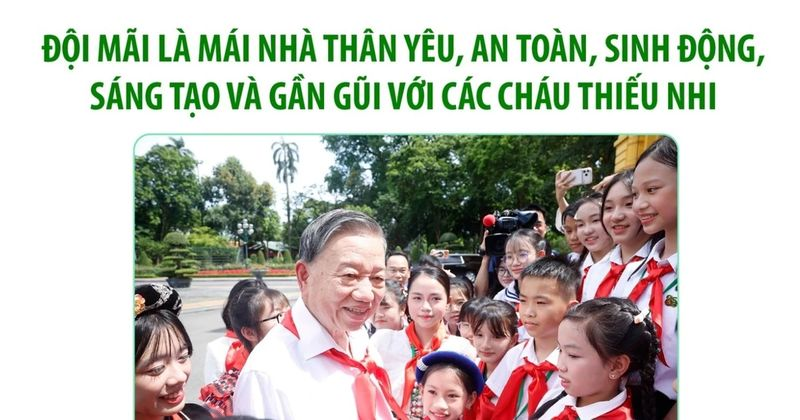
Đội mãi là mái nhà thân yêu và gần gũi với các cháu thiếu nhi 🔗 MOI
Facebook Twitter Lưu bài viết Bản in Copy link Phát biểu tại buổi buổi gặp mặt 85 đội viên tiêu biểu toàn quốc, Tổng Bí thư, Chủ tịch nước Tô Lâm đề nghị tổ chức Đoàn, tổ chức Đội và đội ngũ cán bộ ph
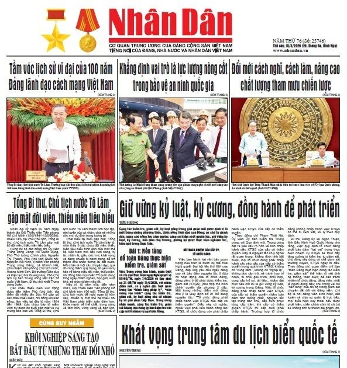
Báo Nhân Dân số 25746 🔗 MOI
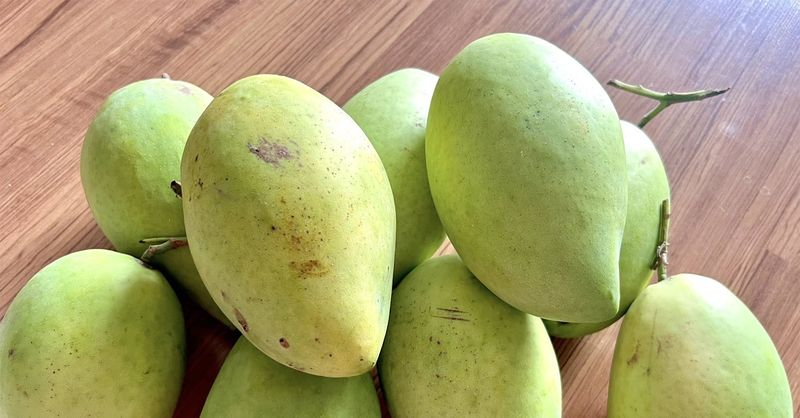
6 loại trái cây ngọt hơn đường nhưng vẫn tốt cho sức khỏe 🔗 MOI
Nhờ chứa lượng đường tự nhiên cao, nhiều loại trái cây có vị ngọt không kém bánh kẹo nhưng đồng thời cung cấp chất xơ, vitamin, nước và chất chống oxy hóa. Theo nghiên cứu của các nhà khoa học Hàn Quố
Hoa hậu Phan Thị Mơ tuổi 36 vẫn còn độc thân, tự tin sắc vóc 'vạn người mê' 🔗 MOI
Hoa hậu Phan Thị Mơ vừa xuất hiện trong 1 sự kiện tại TPHCM. Trên thảm đỏ, nàng hậu gây chú ý khi diện bộ áo dài trắng cách điệu khoe nét nền nã. Ở tuổi 36, cô được khen trẻ đẹp, vóc dáng thon thả như
Thực phẩm bẩn 'ăn mòn' sức mua 🔗 MOI
Hàng quán bình dân chịu áp lực kép Hàng loạt vụ việc liên quan thực phẩm giả, thực phẩm bẩn bị cơ quan chức năng phát hiện khiến người tiêu dùng rất lo lắng. Gần nhất, Công an TP.HCM triệt phá đường d
Cỏ bàng Đức Lập: Sợi cỏ thân thiện môi trường nhưng người trồng ngày càng chật vật 🔗 MOI
Giữa xu hướng sống xanh và giảm rác thải nhựa, cây cỏ bàng ở xã Đức Lập ( Tây Ninh ) được kỳ vọng mở ra hướng đi mới với các sản phẩm thân thiện môi trường. Thế nhưng phía sau những chiếc túi xách hay
Xử lý trách nhiệm người đứng đầu địa phương chậm xây trường nội trú biên giới 🔗 MOI
Tại cuộc họp, Thứ trưởng Thường trực Bộ Giáo dục và Đào tạo Phạm Ngọc Thưởng cho biết, tính đến ngày 12/5, trong tổng số 108 trường đã khởi công: 1 trường đã khánh thành, đưa vào sử dụng; 25 trường tr
[Video] Dự báo thời tiết ngày 15/5/2026: Nắng nóng bao trùm cả nước, Trung Bộ có nơi trên 38 độ 🔗 MOI
Trong hôm nay, khu vực Bắc Bộ tiếp tục chịu ảnh hưởng của vùng áp thấp phía Tây nên nắng xuất hiện mạnh từ sáng sớm. Đến trưa và chiều, nắng nóng xảy ra trên diện rộng với nền nhiệt tăng nhanh, nhiều
85 mùa xuân của chiếc khăn quàng đỏ 🔗 MOI
Ngày 15 tháng 5 năm 1941, tại thôn Nà Mạ, huyện Hà Quảng, tỉnh Cao Bằng, năm đội viên nhỏ tuổi do đồng chí Kim Đồng dẫn đầu đã thắp lên ngọn lửa đầu tiên của Đội Nhi đồng Cứu quốc. 85 mùa xuân trôi qu
Thời tiết ngày 15-5: Bắc Bộ cảnh báo mưa giông rải rác, Nam Bộ nắng nóng gay gắt 🔗 MOI
(PLO)- Theo Trung tâm dự báo khí tượng thủy văn quốc gia, thời tiết ngày 15-5, Bắc Bộ chiều tối và đêm có mưa rào và giông vài nơi, ngày nắng nóng, có nơi nắng nóng gay gắt. Nam Bộ vẫn tiếp tục có nắn
Được ở nhờ gần 40 năm, người đàn ông ở TPHCM đòi nửa tỷ đồng mới chịu rời đi 🔗 MOI
Bị người ở nhờ ngăn cản sang tên Theo người đại diện của ông N., hiện ông sinh sống ở nước ngoài. Căn nhà đang tranh chấp tại TPHCM trước đây thuộc quyền sở hữu của cụ Nh. và đã được cơ quan có thẩm q
Khủng hoảng bữa ăn bán trú: Những bất cập trong quản lý 🔗 MOI
Điều đáng nói, các vụ việc được phản ánh rầm rộ ban đầu, sau đó là thông báo sơ bộ, rồi dần chìm xuống mà không có kết luận rõ ràng hoặc xử lý triệt để, cho tới khi xuất hiện vụ tiếp theo. Thiếu chủ t
Báo Pháp Luật TP. Hồ Chí Minh 🔗 MOI
U.17 Việt Nam qua lăng kính Văn Quyến và Đình Bắc 🔗 MOI
Đội trưởng đội tuyển VN Đỗ Duy Mạnh khẳng định: "U.17 VN khiến tất cả chúng ta thực sự tự hào khi VN một lần nữa đánh dấu sự hiện diện ở sân chơi World Cup. Các em đã thể hiện được sự quả cảm, kiên cư
Bellingham, Mbappe giúp Real Madrid thắng giải tỏa 🔗 MOI
Trước vòng 36 La Liga, Real Madrid đã không còn hy vọng cạnh tranh chức vô địch. Vì vậy, HLV Arbeloa quyết định xoay tua đội hình, trao cơ hội ra sân cho nhiều cầu thủ thường xuyên dự bị trong cuộc ti
🔗 MOI
Bài viết dưới đây là chia sẻ của cô Nhật Thu - giáo viên tiểu học tại An Giang: Tính đến thời điểm này, đa phần các địa phương đã ban hành kế hoạch tuyển sinh lớp 10 và lựa chọn hình thức thi tuyển vớ
Giáo sư 89 tuổi ở Hà Nội làm việc 12 tiếng/ngày, thảo luận tiếng Anh với ChatGPT 🔗 MOI
Ở tuổi 89, đôi mắt GS.TS Phạm Huy Dũng vẫn rất sáng, nhìn rõ những dòng chữ nhỏ dày đặc trên màn hình máy tính khoảng 11 inch, đôi tay gõ phím thoăn thoắt. Hiện, giáo sư đang viết bản thảo tập 3 của b
Mua vé dãy số độc lạ 50000, nhiều người ở TP.HCM trúng xổ số miền Nam 🔗 MOI
Đó là chia sẻ của anh Vũ Huỳnh, đại diện hệ thống đại lý vé số Đại Phát ở TP.HCM sau khi bán trúng 32 tờ vé số có dãy số cuối độc lạ là 50000, trúng xổ số miền Nam ngày 12 tháng 5 . 32 tờ vé số có dãy
Chủ tịch Vĩnh Long chỉ đạo giải quyết vụ 77 cán bộ khuyến nông bị 'treo' lương 🔗 MOI
Liên quan vụ việc 77 viên chức được điều chuyển từ Trung tâm Khuyến nông thuộc Sở Nông nghiệp và Môi trường (NN&MT) Vĩnh Long về UBND các xã, nhưng bị 'treo' lương tháng 3 do không rõ đơn vị trả, ngày
Người đàn ông 60 tuổi giở trò đồi bại với bé gái 6 tuổi 🔗 MOI
CCông an tỉnh Quảng Ninh ngày 14-5 cho biết Cơ quan Cảnh sát điều tra, Công an tỉnh vừa ra quyết định tạm giữ hình sự đối với Phạm Văn Chính (SN 1966, quê tại xã Minh Thái, tỉnh Ninh Bình) để điều tra
Tại sao dịch virus Hanta khác COVID-19? 🔗 MOI
Những hành khách cuối cùng trên tàu du lịch MV Hondius, nơi xảy ra ổ dịch virus Hanta, đã được đưa bằng đường hàng không tới Hà Lan. Tuy nhiên, các ca nhiễm mới vẫn tiếp tục xuất hiện. Trong lúc giới
Công nghiệp văn hóa cần xung lực mới 🔗 MOI
Các giải pháp về cơ chế, chính sách; về đào tạo nguồn nhân lực, xây dựng thị trường… Tại talkshow "Công nghiệp văn hóa TP HCM - Từ chính sách đến thực tiễn sáng tạo" do Báo Người Lao Động tổ chức sáng
Kỷ lục gia Sawe tái xuất tại Berlin Marathon 🔗 MOI
"Có lẽ nhiều người đang tò mò mục tiêu của tôi lần này là gì", Sawe thông báo hôm 13/5. "Sau chiến thắng ở London và cột mốc sub2 marathon, tôi chỉ có thể nói rằng mình sẽ chuẩn bị tốt nhất trong khả
Kết quả bóng đá hôm nay 15/5 🔗 MOI
Kết quả bóng đá hôm nay La Liga 2025/26 00:00 15/05 Valencia 1-1 Vallecano SCTV15 01:00 15/05 Girona 1-1 Sociedad SCTV22 02:30 15/05 Real Madrid 2-0 Real Oviedo SCTV15 Saudi Pro League 2025/26 22:55 A
Yamal bị cáo buộc 'kích động thù hận' 🔗 MOI
Một khoảnh khắc của Yamal trong lễ diễu hành mừng vô địch La Liga hôm 11/5 đã trở thành vấn đề gây tranh cãi chính trị. Trong lúc xe bus chở đội bóng di chuyển qua các tuyến phố Barcelona, tiền đạo ng
Dự báo thời tiết 15/5/2026: Miền Bắc vẫn nắng nóng đến gay gắt, Hà Nội trên 37 độ 🔗 MOI
Theo Trung tâm Dự báo khí tượng thủy văn quốc gia, do ảnh hưởng của rìa Đông Nam vùng áp thấp phía Tây phát triển và mở rộng về phía Đông Nam, các khu vực trên cả nước tiếp tục hứng chịu nắng nóng, có
'Dân là gốc' chính là sợi chỉ đỏ xuyên suốt của Đảng 🔗 MOI
Chủ tịch Hồ Chí Minh và các nhà lãnh đạo tiền bối, danh nhân văn hóa thời đại và anh hùng giải phóng dân tộc luôn khẳng định tư tưởng “X ây lầu thắng lợi trên nền nhân dân”, “Lấy dân làm gốc" là đạo l
Bóng đá trẻ Việt Nam vươn ra biển lớn 🔗 MOI
V ƯỢT XA T HÁI L AN , I NDONESIA Chiến thắng 3-2 trước U.17 UAE (rạng sáng 14.5) đã giúp U.17 VN bắn một mũi tên trúng 2 đích: đoạt vé vào tứ kết châu Á, đồng thời giành tấm vé World Cup lần đầu tiên
U17 Việt Nam giành vé dự U17 World Cup: Xong một đích đến 🔗 MOI
Xong một đích đến U17 Việt Nam đã khép lại hành trình vòng bảng ở VCK U17 châu Á bằng một kịch bản không thể ngọt ngào hơn khi giành ngôi đầu bảng, đồng thời giành vé vào tứ kết cũng như tiến thẳng tớ
Đằng sau lời hứa 'trị dứt điểm' - suy thận, loãng xương và cái chết 🔗 MOI
Bác sĩ Phạm Ánh Ngân, Bệnh viện Đại học Y Dược Thành phố Hồ Chí Minh – Cơ sở 3, cho biết trên hành trình điều trị các bệnh lý mạn tính đau đớn, bà thấy nhiều người dễ tin vào những cam kết "có cánh" n
Tà Xùa sẽ không chỉ có mây 🔗 MOI
Điểm đến khác biệt Ít nơi nào ở vùng cao Tây Bắc hội tụ nhiều lợi thế như xã Tà Xùa. Nằm ở độ cao từ 1.500 đến 2.800 m so với mực nước biển, Tà Xùa được bao bọc bởi dãy Hoàng Liên Sơn hùng vĩ, sở hữu
Mưa lời khen cho U.17 Việt Nam 🔗 MOI
C HIẾN TÍCH LỊCH SỬ FIFA đăng bài chúc mừng đội bóng trẻ VN ngay sau chiến thắng trước UAE, đồng thời nhấn mạnh đây là lần đầu tiên bóng đá VN giành vé dự FIFA U.17 World Cup theo thể thức thi đấu chí
Ngạc nhiên đến thú vị với U17 Việt Nam 🔗 MOI
Từ chức vô địch Đông Nam Á 2026 đến tứ kết Giải U17 châu Á 2026, U17 Việt Nam đang cho thấy hình ảnh một thế hệ trẻ tự tin cầm bóng, dám cạnh tranh và không biết sợ những đối thủ lớn. Trưởng thành qua
Lợi nhuận lập đỉnh, một doanh nghiệp trả cổ tức tiền mặt kỷ lục hơn 63% 🔗 MOI
TIN MỚI CTCP Tư vấn Xây dựng Công nghiệp và Đô thị Việt Nam (UPCoM: CCV) vừa thông báo chốt quyền chia cổ tức năm 2025 bằng tiền mặt với tỷ lệ 63,16%, tương đương 6.316 đồng/cp. Ngày đăng ký cuối cùng

Google ra mắt Gemma 4, AI chạy offline trên thiết bị cá nhân 🔗 MOI
Gemma 4 chạy trực tiếp trên thiết bị cá nhân - Ảnh: THOMAS FULLER Trong bối cảnh trí tuệ nhân tạo vẫn phụ thuộc vào hạ tầng đám mây, việc một mô hình có thể hoạt động trực tiếp trên thiết bị cá nhân đ
Công ty quản lý 'cúi đầu xin lỗi' sau kết luận điều tra vụ Miu Lê sử dụng ma túy 🔗 MOI
Ngày 14/5, công ty KIM Entertainment chính thức công bố kết luận điều tra của cơ quan chức năng đối với ca sĩ Miu Lê liên quan đến vụ việc sử dụng trái phép chất ma túy tại Cát Bà, Hải Phòng cách đây
Dấu ấn nguồn vốn tín dụng chính sách 🔗 MOI
Năm 2003, Phòng giao dịch Ngân hàng Chính sách xã hội Krông Bông được thành lập, đánh dấu bước khởi đầu cho hành trình đưa nguồn vốn ưu đãi của Nhà nước đến với người nghèo và các đối tượng chính sách
'Điểm hẹn' văn hóa nơi phố núi 🔗 MOI
Giữ lửa di sản Mỗi tối cuối tuần, không gian quảng trường lại rộn ràng tiếng chiêng, tiếng trống, hòa cùng những vòng xoang uyển chuyển. Giữa quảng trường rộng lớn, dưới tượng đài Bác Hồ với các dân t
Ngủ mơ sex có phải bị bệnh tâm thần? 🔗 MOI
Trả lời: Giấc mơ tình dục là hiện tượng rất thường gặp, kể cả khi mơ quan hệ với người lạ, người quen, thậm chí những tình huống ngoài đời mình không muốn. Khi ngủ, đặc biệt giai đoạn REM, não vẫn xử
Trung tâm bảo trợ xã hội quy mô nhất Hải Phòng 🔗 MOI
Trung tâm Nuôi dưỡng bảo trợ xã hội Hải Dương được xây mới trên địa bàn hai xã Nam Sách và Thái Tân (huyện Nam Sách, tỉnh Hải Dương cũ) khánh thành vào ngày 14/5. Bà Nguyễn Minh Thúy, Giám đốc Trung t
Miu Lê xin lỗi khán giả 🔗 MOI
Tối 14/5, ca sĩ đưa ra lời xin lỗi ngay sau khi nhà chức trách thông báo cho rằng cô chưa bị khởi tố do "chưa đủ căn cứ để xử lý hình sự", và là "đối tượng thụ hưởng" trong vụ án tàng trữ, sử dụng trá
Chuyên gia Thái: 'Đội nhà bị loại không đau bằng Việt Nam dự U17 World Cup' 🔗 MOI
Bài viết mang tiêu đề "Thái Lan bị loại không đau bằng thấy Việt Nam đi U17 World Cup" của fanpage bóng đá Thái Lan Khobsanam Ball Thai thu hút hơn 1.000 lượt thích cùng hàng trăm bình luận chỉ sau và
Lịch thi đấu V-League cực hay hôm nay: Cuộc chiến sinh tồn, Đà Nẵng sẽ rớt hạng nếu thua đội CA TP.HCM? 🔗 MOI
CLB TP.HCM sẽ có chiến thắng thứ 2 liên tiếp? Ảnh: CLB TP.HCM CLB CA TP.HCM săn tìm chiến thắng Trước trận đấu CLB CA TP.HCM đang rất tự tin sau khi giành chiến thắng 3-1 trước SLNA để bảo đảm một vị

Cảnh báo thiếu mưa, xâm nhập mặn gia tăng 🔗 MOI
Phổ biến 35-37 độ C, có nơi trên 37 độ C; độ ẩm tương đối thấp nhất phổ biến 45%-50%. Khu vực từ Thanh Hóa đến TP Đà Nẵng và phía Đông các tỉnh từ Quảng Ngãi đến Đắk Lắk cũng có nắng nóng và nắng nóng
'Avatar bệnh nhân' giúp bác sĩ ICU ra quyết định trong vài giây 🔗 MOI
"Việc theo dõi bệnh nhân không còn đơn thuần là quan sát các chỉ số trên màn hình", Giáo sư Aurel K. Qian, thành viên Ban Cố vấn Hiệp hội Hệ thống Quản lý và Thông tin Y tế (HIMSS) khu vực Châu Á – Th
Những trái cây người tăng huyết áp nên ăn thường xuyên 🔗 MOI
Dưa hấu chứa axit amin L-citrulline được cơ thể chuyển hóa thành L-arginine - một axit amin giúp sản sinh nitric oxide, có tác dụng thư giãn mạch máu và hỗ trợ lưu thông máu. Uống nước ép dưa hấu còn
Tế bào tiền ung thư nguy hiểm thế nào 🔗 MOI
Tiền ung thư có nghĩa là các tế bào phát triển bất thường, thay đổi về kích thước, hình dạng hoặc đặc điểm bên ngoài. Những thay đổi này có thể làm tăng nguy cơ ung thư, nhưng thường không thể dự đoán
Ông chủ ‘heo ăn chay’ đưa công ty gạo lên sàn HOSE: Doanh thu nghìn tỷ, lãi quý 1 tăng vọt 86% 🔗 MOI
TIN MỚI Theo văn bản từ HOSE, Lương thực A An sẽ đưa vào giao dịch toàn bộ 65 triệu cổ phiếu phổ thông, tương ứng quy mô vốn điều lệ 650 tỷ đồng tính theo mệnh giá. Trước khi hồ sơ niêm yết được thông
'Sách lậu làm ngành xuất bản suy yếu' 🔗 MOI
Bà Lệ Chi, giám đốc Công ty cổ phần văn hóa Chibooks, đề cập nạn sách lậu trong chương trình Giao lưu bản quyền sách Việt - Trung 2026 tại TP HCM, sáng 14/5. Bà Chi cho biết để xuất bản một cuốn sách,

CMC OpenAI phát triển mô hình AI pháp lý tiếng Việt 🔗 MOI
Bộ chuẩn đánh giá VLegal - Bench của nhóm nghiên cứu C-OpenAI đăng ký trên cổng arXiv của Trường đại học Cornell - Mỹ phiên bản mới nhất cập nhật ngày 25-12-2025. CMC OpenAI , công t
Đọc nhanh KTSG Bản in 🔗 MOI
Trang mà bạn đang truy cập không tồn tại! Để đọc tiếp, bạn có thể click vào các trang bên dưới:!
Câu chuyện thương trường 🔗 MOI
Các dự án tập trung vào các lĩnh vực công nghiệp, hạ tầng, xử lý rác thải, thiết bị y tế, vật tư sản xuất nông nghiệp, may mặc, thương mại, dịch vụ tổng hợp, chế biến nông sản.
Nghiên cứu thị trường 🔗 MOI
9 tháng đầu năm 2025, CPI tăng 3,27%, lạm phát cơ bản tăng 3,19%, Cục Thống kê đánh giá lạm phát 'đang trong tầm kiểm soát'.
Dự báo Hà Nội có mưa từ Chủ Nhật tuần này, nhiệt độ giảm rõ rệt 🔗 MOI
Ảnh-Clip hay Hà Nội nóng nhất trong đợt này vào ngày 14/5, nhiệt độ ở mức bao nhiêu?
Dự báo Thời tiết Hà Nội (15 - 16/5): Oi nóng kéo dài, nhiệt độ thực tế vượt 37 độ C 🔗 MOI
Nhịp sống Thủ đô Bản tin thời tiết Hà Nội (12 - 15/5): Trời giảm mưa, nền nhiệt tăng dần

Từ 15-5, tiết lộ giới tính thai nhi sẽ nhận mức phạt 7-15 triệu đồng 🔗 MOI
Nghị định 90 của Chính phủ có hiệu lực từ ngày 15-5, đã chỉnh sửa, bổ sung nhiều nội dung về hành vi vi phạm hành chính trong lĩnh vực dân số, đặc biệt siết chặt các hành vi liên quan lựa chọn giới tí

'Học đến khi tan đá' đang hút giới trẻ 🔗 MOI
"Học đến khi tan đá" đang trở thành trào lưu cuốn hút nhiều bạn trẻ trên mạng xã hội - Ảnh chụp màn hình Bỏ điện thoại xuống, tập trung "học đến khi tan đá" Người tham gia thử thách sẽ để một cục đá l

AirSnitch có thể chặn và theo dõi dữ liệu WiFi mà không cần mật khẩu 🔗 MOI
Nguy cơ nghe lén từ bên trong một mạng WiFi nội bộ - Ảnh: EZONE.HK Một kỹ thuật tấn công mới mang tên AirSnitch cho thấy WiFi có mật khẩu mạnh chưa chắc đã an toàn tuyệt đối. Dữ liệu người dùng vẫn có

ChatGPT giảm lỗi chữ méo, sai chính tả khi tạo ảnh 🔗 MOI
Giờ đây ChatGPT đã có thể tạo chữ trong ảnh chính xác hơn - Ảnh: REUTERS Trước đây, các công cụ AI tạo ảnh dù rất mạnh về hình ảnh nhưng lại gặp khó khăn khi xử lý chữ. Những lỗi như sai chính tả, biế

Code do AI viết nhanh hơn, nhưng lỗi nhiều gấp 1,7 lần con người 🔗 MOI
AI chuyển hóa từ ý tưởng sang sourcecode nhanh nhưng chưa tinh Nghiên cứu mới nhất từ CodeRabbit (một công cụ đánh giá mã nguồn phổ biến) chỉ ra rằng mã nguồn do AI tạo ra có tỉ lệ lỗi cao gấp 1,7 lần
10 món không nên ăn trước giờ ngủ 🔗 MOI
Tránh những thực phẩm dưới đây có thể giúp bạn ngủ ngon hơn và hạn chế những vấn đề sức khỏe tiêu hóa. Pizza Pizza là món ăn khuya được yêu thích, nhưng có thể làm rối loạn giấc ngủ, đặc biệt với ngườ
Đề xuất mở rộng phạm vi cấm ôtô trên 16 chỗ vào Hoàn Kiếm 🔗 MOI
Theo phương án mới, phạm vi hạn chế được xác định theo đường bao phía trong các tuyến phố: Hàng Đậu - Phùng Hưng - Tràng Thi - Hàng Khay - Tràng Tiền - Trần Quang Khải - Trần Nhật Duật trở vào khu vực
Rạp chiếu phim xưa tại Hà Nội qua ảnh tư liệu 🔗 MOI
Một thế kỷ trước, Hà Nội đã có những rạp chiếu bóng và xuất hiện nhiều hơn vào sau năm 1954, giúp phổ cập văn hóa, đáp ứng nhu cầu giải trí của mọi người. Hình ảnh về các rạp chiếu xưa thường được đăn
Người nước ngoài cần làm thẻ tạm trú khi nào? 🔗 MOI
Tôi được biết ngoài visa thì người nước ngoài còn có thể làm thẻ tạm trú, tuy nhiên tôi chưa rõ trong trường hợp nào cần làm loại giấy tờ này. Bên cạnh đó, tôi cũng muốn biết việc có thẻ tạm trú sẽ ma
Phải tuyển chọn đội tuyển cờ vua Việt Nam theo đúng quy trình 🔗 MOI
Nhiều bất cập tuyển chọn đội tuyển cờ vua Việt Nam Việc tuyển chọn đội tuyển cờ vua VN tham dự Olympiad 2026 như phản ánh của 2 kỳ thủ nữ số 1 và số 2 VN Phạm Lê Thảo Nguyên, Lương Phương Hạnh là bất

Những điểm check-in ở Nha Trang 'nổi rần rần trên mạng' 🔗 MOI
Bờ kè xóm Chụt đặc biệt thu hút giới trẻ đến check-in trong thời gian gần đây - Ảnh: TRẦN HOÀI Bên cạnh những điểm đến, các khu du lịch vốn đã nổi tiếng, nhiều điểm check-in miễn phí hoặc với chi phí

Kỳ tích 2 bé sinh đôi chào đời cách nhau 13 tuần 🔗 MOI
Cha mẹ và em bé thứ 2 trong cặp song sinh - Ảnh: BVCC Theo ông Hưng, cha mẹ của bé (36 và 32 tuổi) đã mong con 5 năm mà chưa được toại nguyện, lần này mẹ bé mang thai đôi nhờ hỗ trợ sinh sản (IVF). Đế

Vinhomes Green Paradise Cần Giờ khiến TP.HCM ‘mơ lớn' về du lịch thể thao, tại sao không? 🔗 MOI
Khoảng 5.000 runner đổ về Cần Giờ đi race VnExpress Marathon Green Paradise Cần Giờ - Ảnh: QUANG ĐỊNH Khởi công từ 19-4 năm ngoái, tới ngày 1-5, đại lộ Tương Lai - Thời Đại rộng, thẳng tắp thuộc dự án

Lái Ferrari 849 Testarossa mới hiểu vì sao có người sẵn sàng đổi penthouse lấy 'ngựa chồm nước Ý' 🔗 MOI
Ferrari 849 Testarossa được lấy cảm hứng từ một số mẫu Ferrari trước đây. Ferrari 849 Testarossa bán ở Việt Nam với mức giá khởi điểm khoảng 35 tỉ đồng, chưa tính các tùy chọn cá nhân hóa. Nhưng với m

Xã miền núi thu 46 tỉ từ YouTube, TikTok, Facebook 🔗 MOI
Phiên chợ số bán sản phẩm địa phương ở Lâm Bình - Ảnh: CÔNG ĐẠI Ngày 2-5, lãnh đạo UBND xã Lâm Bình (tỉnh Tuyên Quang) cho biết UBND xã vừa công bố đề án xây dựng thí điểm "Làng sáng tạo nội dung số g

Pin lượng tử sạc trong một phút, dùng suốt nhiều năm 🔗 MOI
Các nhà khoa học Úc làm việc với pin lượng tử trong phòng thí nghiệm - Ảnh: CSIRO Nghiên cứu công bố trên tạp chí Light: Science & Applications bởi nhóm chuyên gia từ Đại học Melbourne và cơ quan khoa

Giải mã hiện tượng du khách đổ đến Huế, Đà Nẵng 🔗 MOI
Khu vực đôi bờ sông Hàn (Đà Nẵng) đông nghẹt người vào cao điểm giỗ Tổ Hùng Vương - Ảnh: B.D. Hình ảnh hàng ngàn người ken đặc, chen nhau đi qua Ngọ Môn để tham quan Đại Nội Huế về đêm trở thành khoản

HLV Philippe Troussier: U22 Việt Nam có sức ép 🔗 MOI
Tiền vệ Công Đến (giữa) trên sân tập tại Campuchia chiều 26-4 - Ảnh: N.K. "Chúng tôi có sức ép về mục tiêu tại SEA Games . Chúng tôi có sức ép phải chơi thứ bóng đá tốt nhất của mình.

Xem video siêu phẩm từ giữa sân của Chanathip vào lưới Công An Hà Nội 🔗 MOI
Video Chanathip lập siêu phẩm vào lưới Công An Hà Nội - Nguồn: FPT Play Ở trận đấu này, CLB Công An Hà Nội đã sớm có bàn thắng dẫn trước ở phút 20 nhờ công của Alan. Sau đó, đại diện bóng đá Việt Nam

6 VĐV nghiệp dư được tuyển chọn vào các CLB bóng rổ chuyên nghiệp 🔗 MOI
Các vận động viên Lâm Bình Duy, Nguyễn Thế Đăng và Trần Minh Tiến (từ trái qua) - Ảnh: BTC Sáng 17-4, tại trụ sở Tập đoàn FPT (Hà Nội) diễn ra sự kiện VBA Rookie Draft 2026. Đây là hoạt động cuối cùng

Mùng 3 Tết, Lễ hội xuân Cần Giờ tại Vinhomes Green Paradise đông vui vượt mong đợi 🔗 MOI
Gian hàng ông đồ thu hút nhiều người đến xin chữ đầu năm - Ảnh: VĨNH SƯƠNG Chị Hằng, một cư dân sống ở Cần Giờ (TP.HCM) nhiều năm, chia sẻ chị không nghĩ Lễ hội xuân Cần Giờ lại đông vui đến vậy. “Lễ

'Người Việt nhìn phân khúc để tranh cãi, nhìn giá để mua xe' 🔗 MOI
Omoda C5 SHS-H gây tranh cãi về định vị phân khúc - Ảnh: VĨNH PHÚC Những chiếc xe "xen kẹt" Sự xuất hiện của Omoda C5 SHS-H nhanh chóng làm dấy lên tranh luận xoay quanh việc mẫu xe này thuộc phân khú